İçindekiler
▸ Komut Satırı
▸ Metin İşlemleri
▸ Gelişmiş Metin İşlemleri
▸ Bilgi Alma Komutları
▸ Kullanıcı Yönetimi
▸ İzinler
▸ Disk Yönetimi
▸ İşlem Yönetimi
▸ Çalışma Seviyeleri (Runlevels)
▸ Servis Yönetimi
▸ Zamanlanmış Görevler
Linux'un nasıl ortaya çıktığını öğrenmek için, 1969'a, Ken Thompson ve Dennis Ritchie'nin Bell Laboratuvarlarında UNIX işletim sistemini geliştirdikleri zamana dönelim. Daha sonra taşınabilirliği artırmak için C dilinde yeniden yazıldı ve sonunda yaygın olarak kullanılan bir işletim sistemi haline geldi. Fakat UNIX işletim sistemi lisans ücreti talep ediyordu.
Yaklaşık on yıl sonra, Richard Stallman, GNU (GNU, UNIX Değildir) projesi üzerinde çalışmaya başladı. Bu proje kapsamında Hurd adında bir GNU çekirdeği geliştirildi, ancak maalesef asla tamamlanmadı. Bunun sonucu olarak, özgür yazılım lisansı olan GNU Genel Kamu Lisansı (GPL) de oluşturuldu.
Çekirdek, işletim sisteminin en önemli parçasıdır. Donanımın yazılımla iletişim kurmasını sağlar. Biz kullanıcılar sistemde bulunan yazılımlar ile çekirdeğe emirler veririz, çekirdekde donanıma o işi yaptırır. Çekirdek sisteminizde olup biten her şeyi kontrol eder.
Bu dönemde BSD, MINIX vb. gibi diğer UNIX benzeri sistemler geliştirildi. Ancak, tüm bu UNIX benzeri sistemlerin ortak noktası, tek bir çekirdek eksikliğiydi.
Ardından 1991'de Linus Torvalds adında genç bir adam, bugün bildiğimiz Linux çekirdeğini geliştirmeye başladı. Topluluğa sunulması ile Linux çekirdeği dahada geliştirildi.
Sonuç olarak Linux çekirdeğinin GPL lisansına geçişiyle birlikte, GNU projesinin halihazırda sahip olduğu açık kaynaklı özgür yazılım araçları ve topluluk desteği, ortaya açık kaynaklı ve özgür bir işletim sistemi olan “GNU Linux” işletim sistemini çıkarmıştı. GNU’nun eksik olan çekirdeği, Linux çekirdeğinin de eksik olan işletim sistemi araçları birbirini tamamlayarak açık kaynaklı özgür bir işletim sistemi oluşturdu.
Bir Linux sistemi üç ana bölümden oluşur:
Seçilebilecek birçok Linux dağıtımı vardır, sadece en popüler seçeneklere göz atacağız.
Genel Bakış
Debian, tamamen özgür ve açık kaynaklı yazılımlardan oluşan bir işletim sistemidir. Geniş çapta bilinen ve 20 yılı aşkın süredir geliştirilmektedir. Kullanabileceğiniz üç ana sürümü vardır: Stable ( kararlı), Testing (test ) ve Unstable (kararsız).
Sürümler
Stable: Genel olarak kullanılması iyi olan bir sürüm. Sisteminizde kararlılık ve güvenlik öncelikliyse bu sürümü tercih edebilirsiniz. Testing ve Unstable: Sürekli güncelleme (rolling release) alan dallardır. Bu, bu dallardaki aşamalı değişikliklerin sonunda Stable sürümüne dahil olacağı anlamına gelir. Örneğin, Windows XP'den Windows 10'a yükseltme yapmak istiyorsanız, tam bir Windows 10 kurulumu yapmanız gerekir. Ancak Testing sürümünü kullanıyorsanız, tam bir kurulum yapmadan bir sonraki işletim sistemi sürümü olana kadar otomatik olarak güncellemeleri alacaksınız.
Paket Yönetimi
Debian, kendi paket yönetim (APT) araçlarını kullanır. Her Linux dağıtımı paketleri farklı şekilde kurar, yönetir ve farklı paket yönetim araçları kullanır.
Yapılandırılabilirlik
Debian en son güncellemeleri almasa da son derece kararlıdır. İyi bir "temel" işletim sistemi arıyorsanız, bu sizin için doğru tercih olabilir.
Kullanım Alanları
Debian, her platform için genel olarak harika bir işletim sistemidir.
Genel Bakış
Red Hat Enterprise Linux, genellikle RHEL olarak adlandırılır ve Red Hat tarafından geliştirilir. RHEL, ücretsiz yeniden dağıtımı kısıtlamak için katı kurallara sahiptir, ancak yine de kaynak kodunu ücretsiz olarak sağlar.
Paket Yönetimi
RHEL, Debian'dan farklı bir paket yöneticisi olan RPM paket yöneticisini kullanır.
Yapılandırılabilirlik
RHEL tabanlı işletim sistemleri, Debian tabanlı işletim sistemlerinden biraz farklılık gösterecek, özellikle paket yönetiminde daha belirgin olacaktır.
Kullanım Alanları
Adından da anlaşılacağı gibi, çoğunlukla kurumsal alanda kullanılır, bu nedenle sağlam bir sunucu işletim sistemine ihtiyacınız varsa bu iyi bir tercih olacaktır.
Genel Bakış
Kişisel bilgisayarlar için en popüler Linux dağıtımlarından biri Ubuntu'dur. Ubuntu ayrıca varsayılan olarak kendi masaüstü ortamı yöneticisi Unity'yi yayınlar.
Paket Yönetimi
Ubuntu, Canonical tarafından geliştirilen Debian tabanlı bir işletim sistemidir. Dolayısıyla temel olarak Debian paket yönetim sistemini kullanır.
Yapılandırılabilirlik
Linux'a başlamak isteyen yeni başlayanlar için Ubuntu harika bir seçimdir. Ubuntu, kullanıcı dostu arayüzü ve geniş çapta benimsenilmesine yol açan kullanım kolaylığı sunar. Yaygın olarak kullanılmakta ve desteklenmektedir ve kullanılabilirlik açısından diğer işletim sistemleri gibi OSX ve Windows'a en çok benzerlik gösterir.
Kullanım Alanları
Masaüstü, dizüstü bilgisayar ve sunucu dahil olmak üzere her platform için uygundur.
Genel Bakış
Red Hat tarafından desteklenen Fedora Projesi, açık kaynaklı ve ücretsiz yazılımları içeren, topluluk odaklı bir projedir. Red Hat Enterprise Linux, Fedora'dan dallanarak geliştirilir, bu nedenle Fedora'yı bir upstream RHEL işletim sistemi olarak düşünebilirsiniz. Sonuç olarak, Red Hat Enterprise Linux, kapsamlı test ve kalite güvencesinden sonra Fedora'dan güncellemeler alacaktır. Fedora'yı, Debian yerine Red Hat altyapısı kullanan bir Ubuntu eşdeğeri olarak düşünebilirsiniz.
Paket Yönetimi
Fedora, Red Hat paket yöneticisini kullanır.
Yapılandırılabilirlik
Red Hat tabanlı bir işletim sistemi kullanmak istiyorsanız, bu kullanıcı dostu bir versiyondur.
Kullanım Alanları
Fedora, Red Hat tabanlı bir işletim sistemini fiyat etiketi olmadan kullanmak istiyorsanız harika bir seçimdir. Masaüstü ve dizüstü bilgisayarlar için önerilir.
Genel Bakış
Linux Mint, Ubuntu tabanlı bir işletim sistemidir. Ubuntu'nun yazılım depolarını kullanır, böylece her iki dağıtımda da aynı paketler kullanılabilir. Ubuntu'dan daha hafif bir dağıtım tercih ediyorsanız, Linux Mint ilginizi çekebilir.
Paket Yönetimi
Linux Mint, Ubuntu tabanlı olduğundan Debian paket yöneticisini kullanır.
Yapılandırılabilirlik
Harika bir kullanıcı arayüzü sunar, yeni başlayanlar için uygundur ve Ubuntu'dan daha az gereksiz yazılım içerir.
Kullanım Alanları
Masaüstü ve dizüstü bilgisayarlar için uygundur.
Genel Bakış
Arch Linux, %100 topluluk tarafından yönetilen, hafif ve esnek bir Linux dağıtımdır. Debian'a benzer şekilde, Arch da sürekli güncelleme modelini (rolling release) kullanır, bu nedenle kademeli güncellemeler sonunda Stable (kararlı) sürüm haline gelir. Sistemi ve işlevlerini anlamak için gerçekten uygulamalı olarak öğrenmeniz gerekir, ancak karşılığında sisteminiz üzerinde tam ve eksiksiz kontrol elde edersiniz.
Paket Yönetimi
Paketleri kurmak, güncellemek ve yönetmek için kendi paket yöneticisi Pacman'ı kullanır.
Yapılandırılabilirlik
Hafif bir işletim sistemi istiyor ve Linux'u gerçekten anlamak istiyorsanız Arch'ı kullanın! Biraz öğrenme eğrisi olsa da, hardcore Linux kullanıcıları için harika bir seçimdir.
Kullanım Alanları
Masaüstü ve dizüstü bilgisayarlar için uygundur. Ayrıca Raspberry Pi gibi küçük bir cihazınız varsa ve üzerine hafif bir işletim sistemi kurmanız gerekiyorsa, Arch'ı tercih edebilirsiniz.
Genel Bakış
openSUSE Linux, tüm dünyadaki Özgür ve Açık Kaynaklı Yazılım topluluğunun bir parçası olarak açık, şeffaf ve dostça bir şekilde birlikte çalışan openSUSE Projesi tarafından yaratılmıştır. openSUSE, halen çalışmakta olan ikinci en eski Linux dağıtımıdır ve ödüllü SUSE Linux Enterprise ürünleriyle taban sistemini paylaşır.
Paket Yönetimi
RPM paket yöneticisini kullanır.
Kullanılabilirlik
openSUSE, yeni bir Linux kullanıcısı için harika bir seçimdir. Kullanımı kolay bir grafiksel kurulum/yönetim uygulaması (YaST) ve düzenli bir temel sistem sunar, kurcalamaya kolay açıktır. openSUSE, ister fotoğraflarınız, videolarınız, müzikleriniz ister kodunuz olsun, İnternet'in keyfini virüslerden/casus yazılımlardan endişe duymadan çıkarmanız ve yaratıcılığınızı ortaya koymanız için ihtiyacınız olan her şeyi içerir.
Kullanım Alanları
openSUSE Leap, masaüstü PC ve dizüstü bilgisayarda kullanıma tamamen uygundur.
🔼 Başa Dön
Kabuk, temelde klavyenizden komutlarınızı alıp bunları işletim sistemine göndererek gerçekleştirilmesini sağlayan bir programdır. Daha önce bir GUI (grafiksel arayüz) kullandıysanız, "Terminal" veya "Konsol" gibi progralları görmüşsünüzdür. Bunlar sizin için bir kabuk başlatan programlardır.
Bu belgede kabuk programı bash (Bourne Again SHell) kullanacağız, hemen hemen tüm Linux dağıtımları varsayılan olarak bash kabuğunu kullanır. ksh, zsh, tsch gibi başka kabuklar da mevcuttur, ancak en çok kullanılan kabuk programı bash'dir. chsh -s [kabuk-adı] komutu ile kabuğu değiştirebiliriz. (örneğin chsh -s /usr/bin/bash)
Varsayılan kabuk programını öğrenmek için konsola echo $SHELL komutunu girmeniz yeterli. Bu komutta yer alan echo ifadesi varsayılan kabuğun değerini tutan SHELL değişkenini konsola bastırmanızı sağlıyor.
$ echo $SHELL
/usr/bin/bash
Temelde bizler kabuğa iki tür komut girebiliyoruz. Bu türler “dahili” ve “harici” olarak gruplanmış olan komutlardır.
Dahili komutlar, kabuk programında yerleşik olan araçları çalıştırmak üzere kullanılan komutlardır. Bash üzerinde yer alan tüm dahili komutları görmek için compgen -b komutunu kullanabiliriz.
Harici komutlar ise, mevcut sistem üzerinde yüklü bulunan araçları çalıştırmamızı sağlayan komutlardır. Tabii ki bu tür komutlar harici olan araçları temsil eden komutlar olduğu için kullanmakta olduğunuz sisteme göre harici komutlar değişiklik gösterir. Örneğin siz komut satırı üzerinden metinleri düzenleyebilmenizi sağlayacak olan nano aracını çalıştırmak üzere kabuğa aracın ismini girdiğinizde eğer araç sistemde yüklü ise açılır. Eğer yüklü değilse komut yok hatası alırsınız. İşte burada girdiğiniz nano komutu harici bir komut olarak kabul ediliyor. Çünkü nano aracı bash kabuğunun içinde yüklü gelen bir araç değil, nano aracı harici olarak sisteme yüklenmiş olan bir metin editörü yazılımıdır.
Genel görünümü (promt) aşağıdaki gibidir.
kullanıcı_adı@bilgisayar_adı:su_anki_dizin $
ali@pc:/home/ali/İndirilenler $
Kullandığınız dağıtıma göre promt görünümü değişebilir. Örneğin Kali Linux dağıtımında promt görünümü aşağıdaki gibidir:
┌──(ali㉿kali)-[/home/ali/İndirilenler]
└─$
Promptun sonundaki $ sembolü Bash, Bourne veya Korn kabuğunu kullanan normal bir kullanıcı içindir, komutu yazarken bu sembol eklenmez.
echo komutu, kendisine verilen metin argümanlarını ekrana yazdırır.
$ echo Linux İşletim Sistemi
Linux İşletim Sistemi
Kabuğun bizim girdiğimiz komutları nasıl algıladığından bahsedecek olursak, örneğin sistem üzerinde dosyaları ve dizinleri bulma işi yapan find aracının PATH yolundaki dizinlerde bulunup bulunmadığı kontrol edilir.
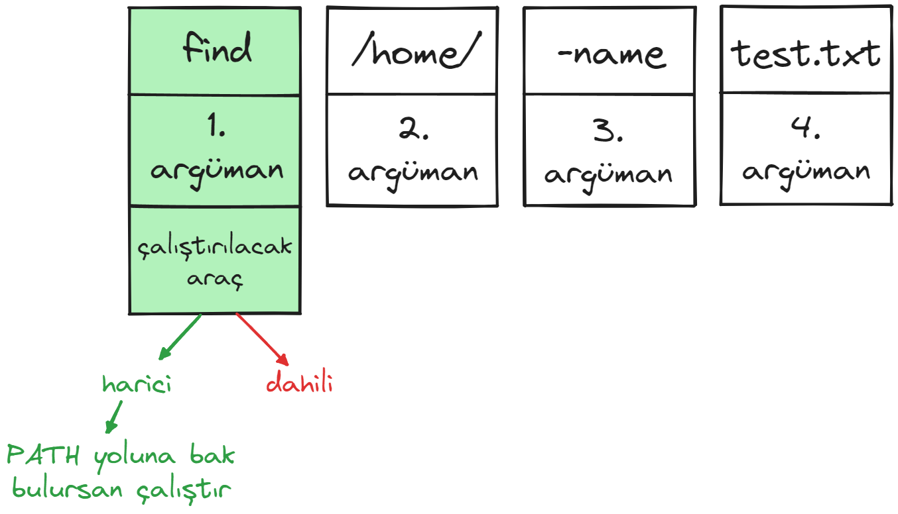
Kabuğa girdiğimiz komutlar path yolundaki dizinlerde bulunması gerekir.
PATH, kabuk (bash, zsh vb.) tarafından çalıştırılabilir dosyaların aranacağı dizinleri tutan ortam değişkenidir. Bir komutu tam yolunu yazmadan çalıştırabilmenizi sağlar.
$ echo $PATH
/usr/local/sbin:/usr/sbin:/sbin:/usr/local/bin:/usr/bin:/bin:/usr/local/games
Burada gördüğümüz iki nokta işareti ile ayrılmış olan her bir dizin adresi, kabuğun bir aracın çalıştırılabilir dosyasını ararken soldan sağa doğru sırasıyla bakacağı dizinlerin adresidir.
PATH’e Geçici Dizin Ekleme (oturumluk)
Sadece açık terminal oturumu için geçerlidir.
export PATH="$PATH:/home/ali/Belgeler/bin"
Terminal kapandığında geçersiz olur.
PATH’e Kalıcı Dizin Ekleme (kullanıcı bazlı)
Kullanıcının her oturumunda geçerli olur.
nano ~/.bashrc
Dosyanın sonuna aşağıdaki kodu ekle:
export PATH="$PATH:/home/ali/Belgeler/bin"
Ardından:
source ~/.bashrc
Sistem Geneli PATH Ekleme (tüm kullanıcılar)
Tüm kullanıcılar için geçerli olur.
sudo nano /etc/profile
Ekleme örneği:
PATH="$PATH:/home/ali/Belgeler/bin"
Özet:
PATH: Komutların arandığı dizinlerin listesi
export PATH=$PATH: ... güncelleme,
~/.bashrc: Kullanıcıya özel,
/etc/profile veya /etc/bash.bashrc : Sistem geneli için.
Eklenen dizini kontrol etmek için:
$ echo $PATH
/home/ali/Belgeler/bin:/usr/local/sbin:/usr/sbin:/sbin:/usr/local/bin:/usr/bin:/bin:/usr/local/games
Linux'ta her şey bir dosyadır, Linux'u derinlemesine öğrendikçe bunu anlayacaksınız, ancak şimdilik sadece bunu aklınızda bulundurun. Her dosya, hiyerarşik bir dizin ağacında organize edilir. Dosya sistemindeki ilk dizin, kök dizin olarak adlandırılır. Kök dizinde, daha fazla klasör ve dosya depolayabileceğiniz birçok klasör ve dosya bulunur. Bu dosya ve dizinlerin konumları yollar olarak adlandırılır.
Nerede olduğunuzu görmek için pwd komutunu kullanabilirsiniz, bu komut "çalışma dizinini yazdır" anlamına gelir ve yalnızca hangi dizinde olduğunuzu gösterir, yolun kök dizinden geldiğini unutmayın.
$ pwd
/home/ahmet
Linux’ta tüm dosya ve dizinler “root” olarak ifade edilen “kök” dizini altında hiyerarşik şekilde tutuluyor. Kök dizin de "/ (slash)" işareti ile temsil ediliyor.
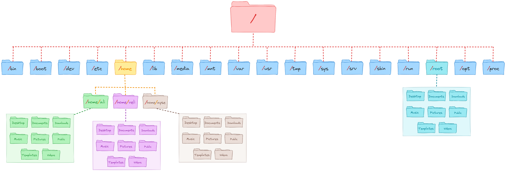
Gördüğünüz gibi tüm dizinler / işareti ile temsil edilen kök dizinin altında bulunuyor.
Dizinlerde gezinmek için “change directory” yani “dizini değiştirme” ifadesinin kısaltmasından gelen cd komutunu kullanabiliyoruz. Dosya sisteminde gezinmek için yolları kullanmamız gerekiyor. Yol belirtmenin kesin (mutlak) ve göreli olmak üzere iki farklı yolu vardır.
Kesin yol “absolute path”: Bu, kök dizinden itibaren olan yoldur. Kök dizin genellikle bir eğik çizgi "/" olarak gösterilir. Yolunuz her zaman kök "/" ile başladığında, kök dizinden başladığınız anlamına gelir. Örneğin, /home/ali/Masaüstü kök ile başladığı için kesin yol oluyor.
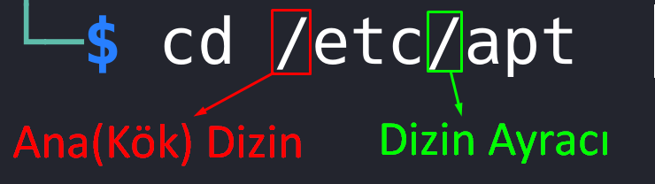
Göreli yol “relative path”: Bu, dosya sistemindeki bulunduğunuz konumdan itibaren olan yoldur. Eğer /home/ali/Dökümanlar konumunda olsaydım ve Dökümanlar içinde vergiler adında bir dizine gitmek isteseydim, /home/ali/Dökümanlar/vergiler gibi kök dizinden başlayarak tüm yolu belirtmeme gerek yok, bunun yerine sadece cd komutuna vergiler/ argümanını verip ilgili dizinine gidebilirim.
İstediğimiz dizine geçmek için cd "dizin değiştir" komutuna gitmek istediğimiz dizin adını argüman olarak verilir.
┌──(ali㉿kali)-[~]
└─$ cd /home/ali/Resimler/
┌──(ali㉿kali)-[/home/ali/Resimler]
└─$
Böylece şimdi dizin konumumu /home/ali/Resimler olarak değiştirdik.
Şimdi bu dizinden Linux adında bir dizin var, şu şekilde odizine gidebilirim:
┌──(ali㉿kali)-[/home/ali/Resimler]
└─$ cd Linux/
┌──(ali㉿kali)-[/home/ali/Resimler/Linux]
└─$
Sadece klasörün adını argüman olarak verdik, çünkü zaten /home/ali/Resimler konumundaydık.
Mutlak ve göreli yollarla gezinmek için size yardımcı olacak bazı kısayollar vardır.
► . (geçerli dizin): Şu anda bulunduğunuz dizindir.
► .. (üst dizin): Sizi şu anki konumunuzun bir üst dizinine götürür.
► ~ (ana dizin): Bu dizin varsayılan olarak "ana dizininize" (/home/kullanıcı_adı) gider.
► - (önceki dizin): Bu sizi az önce bulunduğunuz önceki dizine götürür.
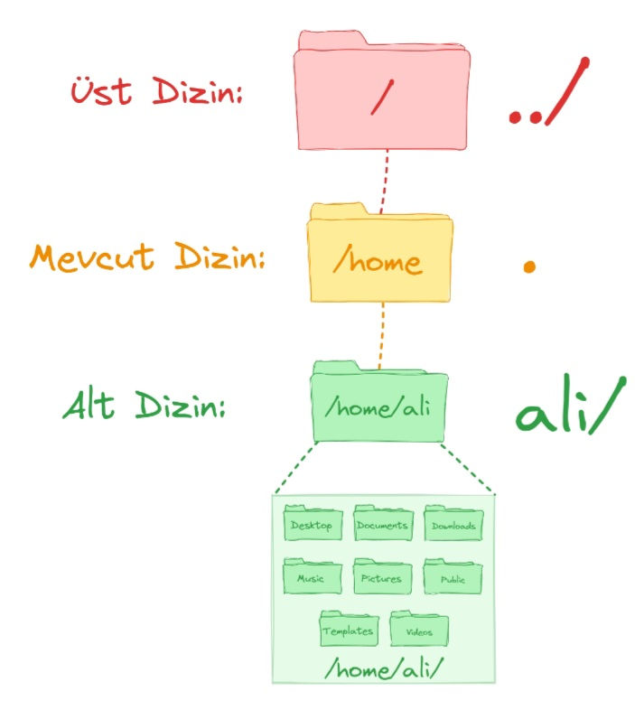
Örnekler:
$ cd . # geçerli dizinde kal
$ cd .. # bir üst dizine git
$ cd ~ # ana dizine git (sadece cd komutuda yeterlidir)
$ cd - # önceki dizine git
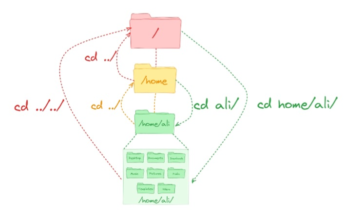
Dizin içeriklerini listelemek için ls komutunu kullanabiliriz. ls komutu varsayılan olarak geçerli dizindeki dizinleri ve dosyaları listeler.
$ ls
'Ekran Görüntüleri' 'Git Resimleri' linux-distribution.png source-code.jpg veritabanı.jpg
Ancak hangi dizinini listelemek istediğinizi belirtebilirsiniz.
$ ls /home/ali/
Belgeler Genel İndirilenler Masaüstü Müzik Resimler Şablonlar Videolar
Nokta ile başlayan dosya adları gizlidir, ancak bunları ls komutuyla görebilirsiniz ve -a (tümü için all) işaretini ekleyebilirsiniz.
$ ls -a
. .cache .gtkrc-2.0 .pki .swt
.. .codeintel İndirilenler .profile Şablonlar
.atom .config .ipython .psql_history .var
.bash_history .eclipse .java pycharm-2025.3 Videolar
.bash_logout .face .junie PyCharmMiscProject .viminfo
.bashrc .face.icon .local Python-3.14.2 .zoom
.bashrc.original Genel Masaüstü .python_history .zprofile
Belgeler .gitconfig metin.txt Resimler .zsh_history
.biglybt .gnupg .mozilla .ssh .zshrc
'BiglyBT Downloads' GNUstep Müzik
Bir başka ls işareti, -l uzun formatta ayrıntılı bir dosya listesi gösterir. Bu size ayrıntılı bilgi gösterecektir, soldan başlayarak: dosya izinleri, bağlantı sayısı, sahip adı, sahip grubu, dosya boyutu, son değişiklik zaman damgası ve dosya/dizin adı.
$ ls -l
toplam 56
drwxr-xrwx 2 ahmet ahmet 4096 Oca 12 16:55 Belgeler
drwxrwxrwx 2 ahmet ahmet 4096 Ara 1 12:28 'BiglyBT Downloads'
drwxr-xrwx 2 ahmet ahmet 4096 Kas 25 13:35 Genel
drwxrwxr-x 4 ahmet ahmet 4096 Ara 1 13:08 GNUstep
drwxr-xrwx 3 ahmet ahmet 4096 Oca 15 17:26 İndirilenler
drwxr-xrwx 13 ahmet ahmet 4096 Oca 16 21:53 Masaüstü
-rw-rw-r-- 1 ahmet ahmet 24 Oca 16 22:28 metin.txt
drwxr-xrwx 2 ahmet ahmet 4096 Kas 25 13:35 Müzik
drwxr-xr-x 10 ahmet ahmet 4096 Oca 21 1970 pycharm-2025.3
drwxrwxr-x 4 ahmet ahmet 4096 Ara 16 12:38 PyCharmMiscProject
drwxrwxr-x 6 ahmet ahmet 4096 Oca 14 21:02 Python-3.14.2
drwxr-xrwx 4 ahmet ahmet 4096 Oca 17 16:55 Resimler
drwxr-xrwx 2 ahmet ahmet 4096 Kas 25 13:35 Şablonlar
drwxr-xrwx 3 ahmet ahmet 4096 Ara 5 22:23 Videolar
Sık kullanılan argümanlar
-l
Uzun listeleme formatı (izinler, sahip, grup, boyut, tarih).
$ ls -l
toplam 29584
drwxr-xrwx 2 ahmet ahmet 4096 Oca 19 15:37 Belgeler
drwxr-xrwx 2 ahmet ahmet 4096 Kas 25 13:35 Genel
drwxrwxr-x 4 ahmet ahmet 4096 Ara 1 13:08 GNUstep
drwxr-xrwx 2 ahmet ahmet 4096 Oca 20 12:50 İndirilenler
-rw-rw-r-- 1 ahmet ahmet 1728252 Kas 29 12:42 kali-abstract-sky.png
-rw-rw-r-- 1 ahmet ahmet 715087 Kas 29 12:39 kali-ferrofluid.jpg
-rw-rw-r-- 1 ahmet ahmet 2377119 Kas 29 12:42 kali-layers.png
drwxr-xrwx 13 ahmet ahmet 4096 Oca 20 12:30 Masaüstü
-rw-rw-r-- 1 ahmet ahmet 24 Oca 16 22:28 metin.txt
drwxr-xrwx 2 ahmet ahmet 4096 Kas 25 13:35 Müzik
-rwxr----- 1 ahmet ahmet 8342944 Tem 22 16:49 'Program Kurma (Kaynak Koddan).mp4'
drwxr-xr-x 10 ahmet ahmet 4096 Oca 21 1970 pycharm-2025.3
drwxrwxr-x 4 ahmet ahmet 4096 Ara 16 12:38 PyCharmMiscProject
drwxrwxr-x 6 ahmet ahmet 4096 Oca 14 21:02 Python-3.14.2
drwxr-xrwx 4 ahmet ahmet 4096 Oca 18 21:00 Resimler
-rwxr----- 1 ahmet ahmet 17064180 Tem 22 16:49 'Süreçler (ps_ pstree_ kill_ killall).mp4'
-h
Dosya boyutlarını insan okunabilir biçimde gösterir (KB, MB, GB).
Genellikle -l ile birlikte kullanılır.
$ ls -lh
toplam 29M
drwxr-xrwx 2 ahmet ahmet 4,0K Oca 19 15:37 Belgeler
drwxr-xrwx 2 ahmet ahmet 4,0K Oca 20 12:50 İndirilenler
-rw-rw-r-- 1 ahmet ahmet 1,7M Kas 29 12:42 kali-abstract-sky.png
-rw-rw-r-- 1 ahmet ahmet 699K Kas 29 12:39 kali-ferrofluid.jpg
-rw-rw-r-- 1 ahmet ahmet 2,3M Kas 29 12:42 kali-layers.png
drwxr-xrwx 13 ahmet ahmet 4,0K Oca 20 12:30 Masaüstü
-rw-rw-r-- 1 ahmet ahmet 24 Oca 16 22:28 metin.txt
drwxr-xrwx 2 ahmet ahmet 4,0K Kas 25 13:35 Müzik
-rwxr----- 1 ahmet ahmet 8,0M Tem 22 16:49 'Program Kurma (Kaynak Koddan).mp4'
drwxr-xr-x 10 ahmet ahmet 4,0K Oca 21 1970 pycharm-2025.3
drwxrwxr-x 4 ahmet ahmet 4,0K Ara 16 12:38 PyCharmMiscProject
drwxrwxr-x 6 ahmet ahmet 4,0K Oca 14 21:02 Python-3.14.2
drwxr-xrwx 4 ahmet ahmet 4,0K Oca 18 21:00 Resimler
-rwxr----- 1 ahmet ahmet 17M Tem 22 16:49 'Süreçler (ps_ pstree_ kill_ killall).mp4'
drwxr-xrwx 2 ahmet ahmet 4,0K Kas 25 13:35 Şablonlar
drwxr-xrwx 3 ahmet ahmet 4,0K Ara 5 22:23 Videolar
-a
Gizli dosyaları da listeler (. ile başlayanlar).
$ ls -a
-A
Gizli dosyaları listeler ancak . ve .. hariç tutar.
$ ls -A
Sıralama Seçenekleri
-t
Dosyaları son değiştirilme zamanına göre sıralar.
$ ls -lt
-S
Dosyaları boyutlarına göre sıralar.
ls -lS
-r
Ters sıralama yapar.
$ ls -ltr
Dosya Türleri ve Ayırt Etme
-F
Dosya türünü sonuna ek işaretle belirtir:
/ → dizin* → çalıştırılabilir dosya@ → sembolik link$ ls -F
--color=auto
Dosya türlerine göre renklendirerek gösterir (çoğu dağıtımda varsayılan).
$ ls --color=auto
Dizin ve Alt Dizin İşlemleri
-d
Dizinin içeriğini değil, dizinin kendisini listeler.
$ ls -ld /etc
-R
Alt dizinlerle birlikte recursive (özyinelemeli) listeleme yapar.
$ ls -R
Zaman Bilgileri
-u
Son erişim zamanına göre listeler.
$ ls -lu
-c
Son durum değişikliği zamanına göre listeler.
$ ls -lc
Yaygın Kullanım Kombinasyonları
ls -lah
Tüm dosyalar, detaylı liste, okunabilir boyutlar.ls -ltrh
En eski dosyalar üstte olacak şekilde detaylı ve okunabilir liste.ls -ld */
Sadece dizinleri uzun formatta listeler.Kısa Özet Tablosu
| Argüman | Açıklama |
|---|---|
-l | Detaylı liste |
-a | Gizli dosyalar |
-h | Okunabilir boyut |
-t | Zamana göre sıralama |
-r | Ters sıralama |
-S | Boyuta göre sıralama |
-R | Alt dizinlerle |
-F | Dosya türü işareti |
-d | Dizinin kendisini gösterir |
Touch, yeni boş dosyalar oluşturmanıza olanak tanır.
$ touch <dosya>
Touch ayrıca mevcut dosya ve dizinlerde zaman damgalarını değiştirmek için kullanılır. Bir dosyadals -l komutunu kullanın ve zaman damgasını not edin, ardından o dosyaya touch komutunu uygulayın, zaman damgası güncellenecektir.
Bir dosyanın ne tür bir dosya olduğunu bulmak için file komutunu kullanabilirsiniz. Bu komut, dosyanın içeriğinin bir açıklamasını size gösterecektir.
$ file man-image.gif
man-image.gif: GIF image data, version 89a, 807 x 662
Linux'ta, dosya adlarının dosyanın içeriğini temsil etmesi gerekmez. Aslında GIF olmayan linux-distribution.gif adında bir dosya oluşturabilirsiniz. Bu onun bi GIF dosyası olduğu anlamına gelmez.
┌──(ahmet㉿kali)-[~/Resimler]
└─$ file linux-distribution.gif
linux-distribution.gif: PNG image data, 2000 x 2416, 8-bit/color RGBA, non-interlaced
Dosya okumak için kullanılır. Bu komut, concatenate (birleştirmek) kelimesinin kısaltmasıdır.
$ cat Notlar.txt
==== NOTLAR ===
Python'u öğrenirken ilerlemenin en iyi yolları.
$ cat Komutlar.txt
=== Komutlar ===
[#] pwd : Bulunduğumuz dizinin tam adresini yazdırır.
[#] ls : Dizin içeriklerini listelemek için kullanılır.
Yalnızca dosya içeriğini görüntülemez, aynı zamanda birden fazla dosyayı birleştirebilir ve size çıktıları gösterebilir.
$ cat Notlar.txt Komutlar.txt
==== NOTLAR ===
Python'u öğrenirken ilerlemenin en iyi yolları.
=== Komutlar ===
[#] pwd : Bulunduğumuz dizinin tam adresini yazdırır.
[#] ls : Dizin içeriklerini listelemek için kullanılır.
Dosyaları birleştirmek ve içeriği dosyaya yazdırmak içinde kullanabilirsiniz.
$ cat Notlar.txt Komutlar.txt > Birlesimi.txt
$ cat Birlesimi.txt
==== NOTLAR ===
Python'u öğrenirken ilerlemenin en iyi yolları.
=== Komutlar ===
[#] pwd : Bulunduğumuz dizinin tam adresini yazdırır.
[#] ls : Dizin içeriklerini listelemek için kullanılır.
Ancak büyük dosyaları görüntülemek için pek uygun değildir ve yalnızca kısa içerikler için kullanılır.
Basit çıktılardan daha büyük metin dosyaları görüntüleyecekseniz, "az daha fazladır" (aslında benzer bir şey yapan more adında bir komut vardır). Metin, sayfa sayfa görüntülenir, böylece bir metin dosyasında sayfa sayfa gezinebilirsiniz.
Devam edin ve bir dosyanın içeriğine less komutu ile bakın. less komutundayken, dosyada gezinmek için diğer klavye komutlarını kullanabilirsiniz.
$ less /home/ali/Dökümanlar/metin1
less içinde gezinmek için aşağıdaki komutlar kullanılır:
less programından çıkıp komut satırına geri dönmek için kullanılır.less programını kullanırken nasıl kullanılacağı hakkında biraz yardıma ihtiyacınız varsa, h özniteliğini kullanarak yardım ekranına erişebilirsiniz.Kabukta, daha önce girdiğiniz komutların bir geçmişi vardır, aslında bu komutlara göz atabilirsiniz. Bu, daha önce kullandığınız bir komutu yeniden yazmadan bulup çalıştırmak istediğinizde oldukça faydalıdır.
$ history
!!
Örneğin, cat dosya1 yazdıysanız ve tekrar çalıştırmak istiyorsanız, sadece !! yazıp Enter'a basabilirsiniz. Bu, en son çalıştırdığınız komutu çalıştıracaktır.
Ctrl-R tuşlarına birlikte basın. Bu, ters arama komutudur. Ctrl-R'ye basıp aradığınız komutun bir kısmını yazmaya başlarsanız, size eşleşmeleri gösterecektir. Yön tuşları ile bunlar arasında gezinebilirsiniz. Kullanmak istediğiniz komutu bulduktan sonra Enter tuşuna basmanız yeterlidir.$ clear
chrome komutunu çalıştırmaya çalışıyorsanız, chr yazıp Tab tuşuna basabilirsiniz, otomatik olarak chrome tamamlanacaktır.Kabuk üzerine dosya yada dizin kopyalamak için kullanılır.
$ cp <kopyalanacak_dosya> <hedef_konum>
kopyalanacak_dosya kopyalamak istediğiniz dosyadır ve hedef_konum dosyayı kopyaladığınız yerdir.
Örnek:
$ cp metin.txt /home/ali/Dökümanlar/
Bu komut, metin.txt adlı dosyayı /home/ali/Dökümanlar/ dizinine kopyalar.
Birden fazla dosya ve dizini kopyalayabilirsiniz ve ayrıca joker karakterleri de kullanabilirsiniz. Joker karakter, arama için daha fazla esneklik kazandıran bir desen tabanlı seçimi temsil eden bir karakterdir. Daha fazla esneklik için her komutta joker karakterleri kullanabilirsiniz.
Joker karakterler:
*: Tüm tek karakterleri veya herhangi bir dizeyi temsil eder.?: Tek bir karakteri temsil eder.[]: Köşeli parantez içinde yer alan herhangi bir karakteri temsil eder.Örnek:
$ cp *.jpg /home/ali/Resimler
Bu komut, geçerli dizininizdeki tüm .jpg uzantılı dosyaları Resimler dizinine kopyalar.
Yararlı bir komut, -r (recursive, yinelenen) işaretini kullanmaktır. Bu, bir dizin içindeki dosyaları ve dizinleri yinelemeli olarak kopyalar.
Örnek:
$ cp -r Belgeler /home/ali/Dökümanlar
Not: Aynı ada sahip bir dosyayı bir dizine kopyalarsanız, kopyaladığınız dosya, var olan dosya üzerine yazılır. Bu, yanlışlıkla üzerine yazılmasını istemediğiniz bir dosyanız varsa iyi değildir. Dosyayı üzerine yazmadan önce size sormak için -i (interactive, etkileşimli) işaretini kullanabilirsiniz.
Örnek:
$ cp -i dosya /home/ali/Resimler
mv komutu, dosyaları taşımak ve yeniden adlandırmak için kullanılır. cp komutuna benzer şekilde çalışır ancak dosyaları kopyalamak yerine taşır.
Dosya Yeniden Adlandırma
Dosyaları şu şekilde yeniden adlandırabilirsiniz:
$ mv <dosya_ismi> <yeni_dosya_ismi>
Dosya Taşıma
Bir dosyayı farklı bir dizine şu şekilde taşıyabilirsiniz:
$ mv dosya /home/ali/Dökümanlar
Çoklu Dosya Taşıma
Birden fazla dosyayı şu şekilde taşıyabilirsiniz:
$ mv dosya_1 dosya_2 /dizin
Dizin Yeniden Adlandırma
Dizinleri de şu şekilde yeniden adlandırabilirsiniz:
$ mv <dizin> <yeni_dizin_adı>
Üzerine Yazma
Bir dosyayı veya dizini mv ile taşırsanız, o dizinde aynı isimli dosya yada dizin varsa üzerine yazar. Bu davranışı değiştirmek için -i işaretini kullanabilirsiniz.
$ mv -i dizin1 dizin2
Oluşturduğumuz tüm dosyaları depolamak için dizinlere ihtiyacımız olacak. mkdir (Make Directory) komutu bunun için kullanılır, var olmayan bir dizin oluşturur.
$ mkdir <dizin_adı>
- Aynı anda birden fazla dizin oluşturmak için
mkdir kitaplar resimlerkomutu kullanılır.- Tam dizin adresi belirtirek istediğimiz konumda
mkdir ~/Documents/belgelerkomutu ile bir dizin oluşturabiliriz.
Ayrıca -p (parent, üst dizin) işareti ile aynı anda alt dizinler de oluşturabilirsiniz.
$ mkdir -p kitaplar/yerli/favoriler
Eğer mkdir komutunun-v seçeneğini kullanırsak tüm oluşturma işlemleri konsola basılacaktır.
Dosyaları silmek için rm komutunu kullanabilirsiniz. rm (remove) komutu, dosya ve dizinleri silmek için kullanılır.
$ rm dosya1
Dikkat: rm komutu ile silinen dosyaları geri getirmek için bir çöp kutusu yoktur. Silindikten sonra sonsuza kadar kaybolurlar.
Önemli dosyaları kolayca silmesini önlemek için bazı güvenlik önlemleri vardır. Yazma korumalı dosyalar, silinmeden önce sizden onay ister. Bir dizin yazma korumalıysa, kolayca silinemez.
Linux'ta chattr (Change Attribute) komutu, dosyaların ve dizinlerin özniteliklerini (attributes) değiştirmek için kullanılır. Bu komut, standart chmod (izinler) komutundan farklıdır; çünkü dosya izinleri yazma yetkisi verse bile, chattr ile korunan bir dosya silinemez veya değiştirilemez.
Özellikle sistem güvenliğini sağlamak ve kritik dosyaların yanlışlıkla silinmesini önlemek için çok güçlü bir araçtır.
Temel Kullanım Sözdizimi
chattr [operatör] [öznitelik] [dosya_adı]
En Çok Kullanılan Öznitelikler
Aşağıdaki tabloda en yaygın kullanılan chattr parametreleri:
| Öznitelik | Açıklama |
|---|---|
| i (immutable) | Dosya değiştirilemez, silinemez, ismi değiştirilemez ve bağ oluşturulamaz. Root kullanıcısı bile bu korumayı kaldırmadan dosyayı silemez. |
| a (append-only) | Dosya silinemez veya içeriği değiştirilemez; ancak sonuna yeni veri eklenebilir (Log dosyaları için idealdir). |
| c (compressed) | Dosyanın disk üzerinde kernel tarafından otomatik olarak sıkıştırılmasını sağlar. |
| u (undeletable) | Dosya silindiğinde verileri saklanır, böylece geri getirilmesi (undelete) kolaylaşır. |
Dosyayı Tamamen Korumaya Almak (Silinemez/Değiştirilemez)
Bir dosyayı root dahil kimsenin silememesi veya düzenleyememesi için i özniteliği kullanılır:
sudo chattr +i onemli_dosya.txt
Bu aşamadan sonra rm veya nano ile dosyaya müdahale edilemez.
Sadece Veri Eklenmesine İzin Vermek
Bir log dosyasının geçmişinin silinmesini istemiyor, sadece yeni satırlar eklenmesini istiyorsanız:
sudo chattr +a sistem.log
Korumayı Kaldırmak
Özniteliği devre dışı bırakmak için - operatörü kullanılır:
sudo chattr -i onemli_dosya.txt
Bu aşamadan sonra dosya silinebilir.
Öznitelikler lsattr Komutu İle Kontrol Edilir
Bir dosyanın hangi özniteliklere sahip olduğunu görmek için standart ls komutu işe yaramaz. Bunun yerine lsattr komutunu kullanmalısınız:
lsattr onemli_dosya.txt
Çıktı örneği:
----i---------e---- onemli_dosya.txt
Buradaki i, dosyanın kilitli olduğunu gösterir.
Dikkat Edilmesi Gerekenler
chattr komutunu kullanmak için genellikle root veya sudo yetkisi gerekir.
Bu komut genellikle ext2, ext3, ext4, XFS gibi Linux dosya sistemlerinde çalışır.
i özniteliği atanmış bir dosyayı düzenlemeye çalışırsanız, "Permission Denied" (Erişim Engellendi) hatası alırsınız; bu hata dosya izinlerinden (chmod) değil, öznitelikten kaynaklıdır.Dizinlerde kullanım için iki temel yöntem vardır:
1. Sadece Dizinin Kendisini Korumak
Eğer komutu doğrudan dizin ismiyle çalıştırırsanız, öznitelik sadece o klasörün kendisine uygulanır.
sudo chattr +i /home/kullanici/ozel_dizin
Bu ne sağlar?
i özniteliği yoksa) hala değiştirilebilir.2. Alt Dosya ve Dizinlerle Birlikte Korumak (Rekürsif)
Eğer klasörün içindeki her şeyin (tüm alt dosyalar ve klasörler) aynı korumaya sahip olmasını istiyorsanız -R (recursive) parametresini kullanmalısınız.
sudo chattr -R +i /home/kullanici/ozel_dizin
Bu ne sağlar?
+i özniteliğini alır. Artık ne klasör ne de içindeki herhangi bir dosya silinebilir veya içeriği değiştirilebilir.Önemli Bir Fark: i ve a Öznitelikleri
Dizinler söz konusu olduğunda şu farkı bilmek çok faydalıdır:
| Komut | Klasör İçindeki Etkisi |
|---|---|
chattr +i dizin/ | İçine yeni dosya eklenemez, mevcut dosyalar silinemez. |
chattr +a dizin/ | Mevcut dosyalar silinemez ama yeni dosyalar oluşturulabilir. |
Kontrol Etmek İçin
Dizine uygulanan özniteliği görmek için lsattr komutuna -d (directory) parametresini eklemeniz gerekir:
lsattr -d /home/kullanici/ozel_dizin
rm komutuna tüm dosyaları kullanıcıya sormadan silmesini söyler (tabii ki gerekli izinlere sahipseniz).$ rm -f dosya
-i işaretini eklemek, dosyaları veya dizinleri gerçekten silmek isteyip istemediğinizi soran bir uyarı görüntüler.$ rm -i dosya
rm ile bir dizini silemezsiniz. İçerdiği tüm dosyaları ve alt dizinleri silmek için -r (recursive, yinelemeli) işaretini eklemeniz gerekir.$ rm -r dizin
rmdir komutuyla boş bir dizini silebilirsiniz.$ rmdir dizin
Sistemde dosya veya dizin aramak içinfind komutunu kullanabilirsiniz.
Temel Kullanım
find [başlangıç_dizini] [koşullar] [aksiyonlar]
Örnek:
find /etc -name "*.conf"
etc dizni ve tüm alt dizinler altındaki tüm .conf uzantılı dosyaları arar.
Dosya Adı ve Türüne Göre
Dosya adı
-name "desen"
Büyük/küçük harfe duyarlı arama-iname "desen"
Büyük/küçük harfe duyarsız aramafind . -iname "*.jpg"
Dosya türü
-type f → normal dosya-type d → dizin-type l → sembolik link-type b → block device-type c → character devicefind /var -type d
Boyuta Göre Arama
-size +10M → 10 MB’dan büyük-size -100k → 100 KB’dan küçük-size 1G → tam 1 GBBirimler: b, c, w, k, M, G
find /home -size +500M
Zamana Göre Arama
Gün bazlı
-atime → son erişim-mtime → son değişiklik-ctime → metadata değişimifind . -mtime -7 # son 7 gün
find . -mtime +30 # 30 günden eski
Dakika bazlı
-amin-mmin-cminfind . -mmin -60
Sahiplik ve İzinler
Kullanıcı / grup
-user kullanıcı-group grupfind /home -user ahmet
İzinler
-perm 644-perm -644 → en az bu izinler-perm /222 → herhangi birifind . -perm -4000 # SUID dosyalar
Derinlik (Dizin Seviyesi)
-maxdepth N → en fazla N seviye-mindepth N → en az N seviyefind . -maxdepth 1 -type d
Mantıksal Operatörler
-and veya boşluk → VE-or → VEYA! → DEĞİLfind . -type f -name "*.log" ! -size +10M
locate komutu sayesinde sistemdeki dosya ve dizinleri isimleriyle araştırabiliyoruz.
locate komutu daha önce ele aldığımız find aracından farklı olarak araştırma işlemi sırasında tüm dosya sistemine değil daha önceden oluşturulmuş veri tabanını kullanıyor. Bu sayede veri tabanı üzerinden yaptığımız araştırmada, find aracından çok daha hızlı şekilde sonuç verebiliyor.
Aracımızın en temel kullanımı locate aranacak-isim şeklinde. Fakat dediğim gibi locate aracı kendisine ait olan veritabanı üzerinden araştırma yaptığı için araştırmalarımız sırasında daha sağlıklı çıktılar elde edebilmek adına bu veritabanını güncellememiz gerekiyor.
┌──(ahmet㉿kali)-[~]
└─$ locate dosya
Bakın herhangi bir çıktı almadık. Biz bu dosya ve klasörü yeni oluşturduğumuz için locate aracının kullandığı veritabanına bu dosya ve klasörün dizin adresi eklenmedi. Dolayısıyla bu isimde bir eşleşme olmadı.
Veritabanını Güncellemek | updatedb
locate veritabanını güncellemek için sudo updatedb şeklinde komutumuzu girebiliriz. Ayrıca yeni dizinlerin eklenmesini de bir süre beklememiz gerek.
┌──(ahmet㉿kali)-[~]
└─$ sudo updatedb
[sudo] password for ahmet:
Şimdi dosya sistemindeki en son değişikliklerin veritabanına eklenmiş olması gerekiyor. Tekrar etmek için locate ile arama yapabiliriz.
┌──(ahmet㉿kali)-[~/Masaüstü/Documents]
└─$ locate metin-dosyası
/home/ahmet/metin-dosyası
Bakın bu kez anında aradığım kelimeyle eşleşen dosya ve dizinlerin adresi konsola bastırıldı. Bizzat sizin de deneyimleyebileceğiniz gibi locate aracı hızlı çalışıyor olmasına rağmen, veritabanı updatedb komutu ile güncellenmediyse sistemde mevcut olan yeni dosya ve dizinleri bulamıyor. Dolayısıyla locate aracını kullanmadan önce sağlıklı çıktılar almak istiyorsanız mutlaka updatedb komutuyla güncelleme yapın. Normalde her gün düzenli olarak bu veritabanı otomatik olarak güncelleniyor ancak dediğim gibi kullanmadan önce stabil çıktılar istiyorsanız updatedb komutunu çalıştırmanız şart.
Harf Duyarlılığını Kaldırmak
Eğer aradığınız dosya isminde küçük büyük harf duyarlığının görmezden gelinmesini isterseniz komutunuza i seçeneğini de ekleyebilirsiniz.
┌──(ahmet㉿kali)-[~/Masaüstü/Documents]
└─$ locate metin-dosyası
/home/ahmet/metin-dosyası
┌──(ahmet㉿kali)-[~/Masaüstü/Documents]
└─$ locate -i metin-dosyası
/home/ahmet/Metin-Dosyası
/home/ahmet/metin-dosyası
Bakın bu kez küçük büyük harf fark etmeksizin tüm dosya ve klasörler listelenmiş oldu.
Eşleşme Sayısını Öğrenmek
Kaç eşleşme olduğun saymak istersek “count” yani “saymak” ifadesinin kısaltmasından gelen c seçeneğini ekleyebiliriz.
┌──(ahmet㉿kali)-[~/Masaüstü/Documents]
└─$ locate -c linux-operating
76
┌──(ahmet㉿kali)-[~/Masaüstü/Documents]
└─$ locate -ic linux-operating
134
Gördüğünüz gibi harf duyarlılığı olamadan arama yaptığımızda 134 eşleşme olurken, harf duyarlılığı varken yalnızca 76 eşleşme bulunmuş.
Linux, bir komutu nasıl kullanacağınızı öğrenmenize veya bir komut için hangi işaretlerin (flag) mevcut olduğunu denetlemenize yardımcı olacak yerleşik araçlara sahiptir.
help komutu, diğer bash komutları (echo, logout, pwd, vb.) hakkında yardım sağlayan yerleşik bir bash komutudur. Kullanmak istediğiniz komut hakkında bilgi almak için aşağıdaki gibi yazabilirsiniz:
$ help echo
Bu komut, echo komutunu çalıştırmak istediğinizde kullanabileceğiniz açıklamayı ve seçenekleri size gösterecektir.
$ ls --help
--help seçeneği ile komutlar hakkında kısa bir açıklama alabilirsiniz.
Linux programları hakkında daha fazla bilgi edinmek istiyorsanız, man komutunu kullanarak man sayfalarına erişebilirsiniz. Man sayfaları, komutların ayrıntılı açıklamalarını, seçeneklerini ve kullanım örneklerini içerir. Kullanımı man <komut_adı> şeklindedir.
Örneğin, ls komutu hakkında daha fazla bilgi edinmek için:
$ man ls
apropos ya da man -k komutu yardımıyla kolaylıkla sorgulayabilirsiniz.Bir komutun ne işe yaradığından şüphe duyuyorsanız, whatis komutunu kullanarak kısa bir açıklama alabilirsiniz. whatis komutu, komut satırı programları hakkında özlü bilgiler sağlar.
Kullanım:
$ whatis <komut_adı>
Örnek:
$ whatis cat
Bu örnekte, cat komutunun ne işe yaradığı hakkında kısa bir açıklama görürsünüz. Açıklama, komutun man sayfasından alınır.
Linux size, sık kullandığınız komutlar için takma adlar oluşturma imkanı sunar. Bu takma adlar sayesinde komutları daha kısa ve yazması daha kolay hale getirebilirsiniz.
Takma Ad Oluşturma:
Bir takma ad oluşturmak için alias komutunu kullanın. Takma adın ismini istediğiniz gibi seçebilirsiniz, ardından eşittir işaretini (=) yazın ve takma adın hangi komutu çalıştırmasını istediğinizi belirtin.
Örneğin, ls -la komutunu sık sık kullanıyorsanız, bunun için la adında bir takma ad oluşturabilirsiniz:
$ alias la='ls -la'
Bundan sonra, ls -la yazmak yerine la yazabilirsiniz. la yazdığınızda, aslında ls -la komutu çalıştırılacaktır.
Kalıcı Takma Adlar:
Bu komutla oluşturduğunuz takma adlar, terminal oturumunu kapattığınızda kaybolur. Eğer takma adın sürekli olarak kullanılabilir olmasını istiyorsanız, onu konfigürasyon dosyalarından birine eklemeniz gerekir.
Genellikle bash kullanıcıları için takma adlarl /home/ dizinindeki .bashrc dosyasına eklenir. Bu dosyayı bir metin editörü ile açıp, takma adınızı şu şekilde ekleyebilirsiniz:
alias la='ls -la'
Daha sonra dosyayı kaydedin. Artık terminal oturumunu kapatıp açsanız bile la takma adını kullanmaya devam edebilirsiniz.
Takma Ad Silme:
Oluşturduğunuz bir takma ada artık ihtiyacınız yoksa, unalias komutunu kullanarak silebilirsiniz.
$ unalias la
Bu komuttan sonra la takma adını kullanamazsınız. Bütün takma adları listelemek için alias komutu kullanılır.
Shell'den çıkmak için aşağıdaki komutlardan birini kullanabilirsiniz:
exit: Bu en yaygın çıkış komutudur.logout: exit komutuyla aynı işlevi görür.Eğer terminal emülatörü kullanıyorsanız, pencereyi kapatarak da çıkabilirsiniz.
🔼 Başa Dön
Konsola girilen komutların davranışlarını girdi/çıktı akışlarını (I/O) yönetme.
$ echo Selam Linux > dosya.txt
Bu komutu çalıştırdığınız dizine gidin ve orada dosya.txt adında bir dosya oluşacaktır. Dosyayı açtığınızda içinde "Selam Linux" yazısını göreceksiniz. Bu komutu incelediğimizde:
echo Komutu
$ echo Selam Linux
Bu komutun "Selam Linux" yazısını ekrana yazdırdırır. İşlemler, giriş almak ve çıktı döndürmek için girdi/çıktı akışları (I/O) kullanır. Varsayılan olarak, echo komutu klavyeden standart girdi (stdin) alır ve standart çıktı (stdout) olarak ekrana yazdırır. Bu nedenle, echo Selam Linux yazdığınızda ekranda "Selam Linux" görürsünüz.
Yönlendirme Operatörü
Ancak I/O yönlendirme, bize daha fazla esneklik sağlayarak bu varsayılan davranışı değiştirmemize izin verir.
> sembolü, standart çıktının nereye gideceğini değiştirmemizi sağlayan bir yönlendirme operatörüdür. echo Selam Linux komutunun çıktısını varsayılan olarak ekrana yazdırmak yerine, bir dosyaya göndermemizi sağlar. Dosya zaten yoksa, bizim için oluşturur. Ancak, dosya zaten varsa, üzerine yazar (kullandığınız shell'e bağlı olarak bunu önlemek için bir shell işareti ekleyebilirsiniz).
Dosyaya Ekleme
Veriyi dosya.txt dosyasının üzerine yazmak istemezsek >> operatörü kullanılır.
$ echo Selam Linux >> dosya.txt
Bu komut, "Selam Linux" yazısını dosya.txt dosyasının sonuna ekler. Dosya zaten yoksa, tıpkı > yönlendiricisi gibi bizim için oluşturur.
Standart giriş (stdin) akışlarını da farklı kaynaklardan kullanabiliriz. Klavyeden gelen veriler varsayılan standart giriş kaynağı olsa da, dosyaları, diğer işlemlerin çıktılarını ve terminali de stdin olarak kullanabiliriz.
Örnek: stdin Yönlendirme ile Dosya Kopyalama
Önceki bölümde oluşturduğumuz dosya.txt dosyasını kullanalım. Bu dosyanın içinde "Selam Linux" yazısı bulunuyordu.
$ cat < dosya.txt > dosya2.txt
Standart çıktı yönlendirmede > sembolünü kullandık, aynı şekilde standart giriş yönlendirmede de < sembolünü kullanıyoruz.
Normalde cat komutunda, bir dosya ismi verirsiniz ve bu dosya standart giriş (stdin) haline gelir. Bu örnekte, dosya.txt dosyasını standart giriş olarak kullanmak için yönlendirdik. Daha sonra, cat dosya.txt komutunun çıktısı olan "Selam Linux" metni, dosya2.txt adında yeni bir dosyaya yönlendirildi.
Açıklama:
cat komutu, varsayılan olarak standart girişten (stdin) okuyup standart çıktıyı (stdout) ekrana yazar.< dosya.txt kısmı, dosya.txt dosyasının içeriğini standart giriş akışına yönlendirir. Yani, cat komutu sanki klavyeden "Selam Linux" yazmışız gibi davranır.> dosya2.txt kısmı ise standart çıktı akışını dosya2.txt dosyasına yönlendirir. Böylece, cat komutunun "Selam Linux" çıktısı bu dosyaya yazılır.Sonuç:
Bu komutu çalıştırdığınızda, dosya2.txt adında yeni bir dosya oluşur ve içinde "Selam Linux yazısı yer alır. Özetle, bu komut dosya.txt dosyasının içeriğini dosya2.txt dosyasına kopyalamış olur.
Sisteminizde olmayan bir dizinin içeriğini listelemeye çalışalım ve çıktıyı dosya.txt dosyasına yönlendirelim.
$ ls /fake/directory > dosya.txt
Bu komutu çalıştırdığınızda ekranda aşağıdaki gibi bir mesaj görmelisiniz:
ls: cannot access /fake/directory: No such file or directory
Muhtemelen şu anda, bu mesajın dosyaya yazdırılması gerektiğini düşünüyorsunuz. Aslında burada devreye giren başka bir I/O akışı var: standart hata (stderr). Standart çıktı (stdout) akışından tamamen farklı olan standart hata akışı, varsayılan olarak çıktısını da ekrana gönderir. Yani, standart hata çıktısını farklı bir şekilde yönlendirmeniz gerekir.
Ne yazık ki, standart hata yönlendirme sembolleri (< veya >) kadar kolay değildir, ancak dosya tanımlayıcıları kullanılarak yapılabilir. Bir dosya tanımlayıcısı, bir dosyaya veya akışa erişmek için kullanılan negatif olmayan bir sayıdır. Dosya tanımlayıcıları standart giriş (stdin), standart çıktı (stdout) ve standart hata (stderr) için dosya tanımlayıcılarının sırasıyla 0, 1 ve 2 olduğunu bilmeniz yeterli.
Şimdi standart hata çıktısını dosyaya yönlendirmek istiyorsak şöyle yapabiliriz:
$ ls /fake/directory 2> hata.txt
Bu komutta, standart hata mesajlarını hata.txt dosyasına yazdırmış olduk.
Peki hem standart hata hem de standart çıktıyı hata.txt dosyasına yazdırmak istersek dosya tanımlayıcıları ile yapabiliriz:
$ ls /fake/directory > hata.txt 2>&1
Bu komut, ls /fake/directory komutunun sonuçlarını hata.txt dosyasına gönderir ve ardından 2>&1 ile standart hatayı standart çıktının yönlendirildiği yere yönlendirir. İşlem sırası burada önemlidir. 2>&1, standart hatayı standart çıktının işaret ettiği yere gönderir. Bu durumda standart çıktı bir dosyaya işaret ettiğinden, 2>&1 de standart hatayı bir dosyaya gönderir. Yani hata.txt dosyasını açarsanız, hem standart hata, hem de standart çıktı mesajlarını görmelisiniz. Yukarıdaki komut yalnızca standart hata çıktısı ürettiği için her ikisini de görmeyebilirsiniz.
Hem standart hata, hem de standart çıktıyı bir dosyaya yönlendirmenin daha kısa bir yolu vardır:
$ ls /fake/directory &> hata.txt
/dev/null adlı özel bir dosyaya yönlendirebilirsiniz. Bu dosya, herhangi bir girişi yok sayar.$ ls /fake/directory 2> /dev/null
Pipe yapısına ihtiyaç duymamızdaki en temel iki sebep; hızlı çalışması ve aynı anda paralel şekilde işlemler arasında aktarım yapılabilmesi.
Pipe mekanizmasını dik çizgi | operatörü sayesinde kullanabiliyoruz. Pipe mekanizmasında, bu dik çizgi işaretinden önceki komutun çıktıları üretildikleri sıralamaya uygun şekilde bu çizgiden sonraki komuta girdi olarak aktarılıyor. Yani veriler, ilk işlemin ürettiği sıraya uygun şekilde tek yönlü olarak bir sonraki işleme aktarılıyor.
Diyelim ki ben find komutu ile /etc/ dizini altında sonu “.sh” uzantısıyla biten dosyaları araştırmak, bulunan dosyaları isimlerine göre alfanümerik olarak sıralamak ve daha sonra numaralandırmak için bu işi yapacak tek bir araç var mı varsa da hangi seçenekleri kullanmalıyım tam olarak bilmiyorum. Ancak her birini yapan ayrı ayrı üç aracı kullanabilirim. Bunlar find sort ve nl araçları ile bu işlemi yapmak için:
┌──(ahmet@kali)-[~]
└─$ find /etc/ -name "*.sh" -type f 2>/dev/null | sort | nl
1 /etc/console-setup/cached_setup_font.sh
2 /etc/console-setup/cached_setup_keyboard.sh
3 /etc/console-setup/cached_setup_terminal.sh
4 /etc/init.d/console-setup.sh
5 /etc/init.d/hwclock.sh
6 /etc/init.d/keyboard-setup.sh
7 /etc/macchanger/ifupdown.sh
8 /etc/profile.d/bash_completion.sh
9 /etc/profile.d/dotnet-cli-tools-bin-path.sh
10 /etc/profile.d/gawk.sh
11 /etc/profile.d/taylan.sh
12 /etc/profile.d/vte-2.91.sh
13 /etc/wpa_supplicant/action_wpa.sh
14 /etc/wpa_supplicant/functions.sh
15 /etc/wpa_supplicant/ifupdown.sh
16 /etc/xdg/plasma-workspace/env/taylan-themes.sh
Birden fazla aracı pipe ile birbirine bağlamış ve araçların hepsini aynı anda daha hızlı bir şekilde paralel olarak çalıştırmış olduk.
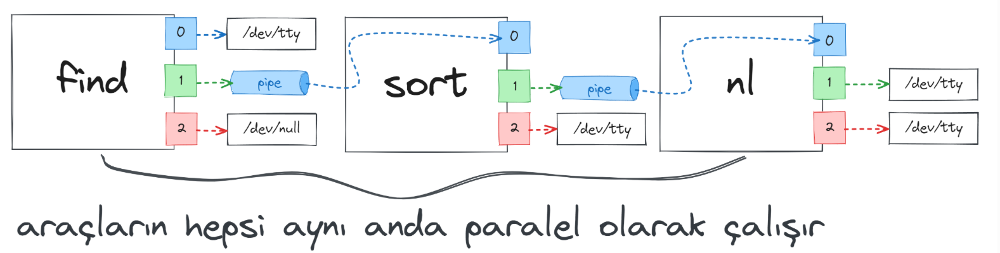
$ ls -la /etc/
Bu komutu çalıştırdığınızda uzun bir öğeler listesi göreceksiniz. Bu çıktıyı bir dosyaya yönlendirmek yerine, çıktıyı less gibi başka bir komuta aktarıp çıktıyı sayfa sayfa görüntüleyebiliriz.
$ ls -la /etc/ | less
Dikey çubukla temsil edilen pipe operatörü |, bir komutun standart çıktı (stdout) verisini alıp başka bir işlemin standart girdi (stdin) verisi haline getirmemizi sağlar. Bu durumda, ls -la /etc komutunun standart çıktısını alıp less komutuna aktardık.
Peki ya komut çıktımı iki farklı akışa yani hem konsol ekranına listelesin hemde dosyaya yazsın istersek, tee komutu kullanır:
$ ls /etc/ | tee liste2.txt
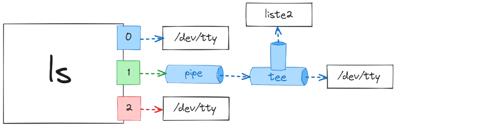
Ekranda ls komutunun çıktısını görmelisiniz ve liste2.txt dosyasını açarsanız aynı bilgileri görmelisiniz!
Bu temel yaklaşım dışında, birden fazla dosyaya aynı veriyi kaydetmek isterseniz, dosyaların isimlerini argüman olarak vermeniz yeterli.
┌──(ahmet㉿kali)-[~]
└─$ ls /etc/ | head | tee dosya1 dosya2 dosya3
adduser.conf
alsa
alternatives
apache2
apparmor
apparmor.d
apt
arp-scan
avahi
bash.bashrc
┌──(ahmet㉿kali)-[~]
└─$ paste dosya1 dosya2 dosya3
adduser.conf adduser.conf adduser.conf
alsa alsa alsa
alternatives alternatives alternatives
apache2 apache2 apache2
apparmor apparmor apparmor
apparmor.d apparmor.d apparmor.d
apt apt apt
arp-scan arp-scan arp-scan
avahi avahi avahi
bash.bashrc bash.bashrc bash.bashrc
Normalde tee komutu aynı isimde bir dosya varsa onun üzerine yazar. Yani o dosyanın içeriğini yok edip, elindeki verileri o dosyaya yazar. Eğer aynı isimli dosya varsa dosya içeriğinin sonuna yeni verilerin eklenmesini istersek “append” yani “ekleme” ifadesinin kısaltması olan a seçeneğini kullanabiliriz.
Yetki gerektiren bir görevi yerine getirmek için komutumuzun en başına sudo ifadesini yazıp eğer yetkimiz uygunsa çalıştırabiliyoruz. Normalde /etc/apt/sources.list dosyasını düzenlemek için yetkimiz yok fakat en yetkili kullanıcı gibi davranmak için komutumuzun başına sudo yazıp işlemi yerine getirebiliriz.
Örneğin sudo echo "### eklenecek veri" >> /etc/apt/sources.list şeklinde komutumuzu girelim.
┌──(ahmet@kali)-[~]
└─$ sudo echo "### eklenecek veri" >> /etc/apt/sources.list
bash: /etc/apt/sources.list: Permission denied
Ancak gördüğünüz gibi yetki hatası aldık. Halbuki komutumuzu sudo yetkisi ile çalıştırdığımız için işlem gerçekleşmeliydi.
Burada sudo komutu işe yaramadı çünkü yönlendirmeler üzerinde sudo komutunun etkisi bulunmuyor. Yani yönlendirmeyi yine mevcut yetkisiz kullanıcımız yapmış oluyor. Dolayısıyla sudo komutunu kullansak dahi yönlendirme operatörü ile, ilgili dosyaya veri yazma yetkisi kazanamayız. Fakat bunun yerine tee komutunu sudo ile yetkili şekilde çalıştırıp işlemimizi gerçekleştirebiliriz. Komutumuzu echo "### eklenecek veri" | sudo tee -a /etc/apt/sources.list şeklinde yazıyorum. Buradaki a seçeneğini unutmayın aksi halde bu çok önemli dosyasının tüm içeriğinin silinmesine neden olabilirsiniz.
┌──(ahmet㉿kali)-[~/Masaüstü/Documents]
└─$ echo "### eklenecek veri" | sudo tee -a /etc/apt/sources.list
[sudo] password for ahmet:
###
┌──(ahmet㉿kali)-[~/Masaüstü/Documents]
└─$ cat /etc/apt/sources.list
# See https://www.kali.org/docs/general-use/kali-linux-sources-list-repositories/
deb http://http.kali.org/kali kali-rolling main contrib non-free non-free-firmware
# Additional line for source packages
# deb-src http://http.kali.org/kali kali-rolling main contrib non-free non-free-firmware
### eklenecek veri
Bakın dosyanın en sonuna “### eklenecek veri” ifadesi eklenmiş.
Linux'ta env komutu, temel olarak ortam değişkenlerini (environment variables) yönetmek ve görüntülemek için kullanılan çok yönlü bir araçtır.
Aşağıdaki komutu çalıştırdığızda ev dizininize giden yolu görmelisiniz:
$ echo $HOME
Kullanıcı adınızı görmek için:
$ echo $USER
Bu bilgiler ortam değişkenlerinizden geliyor. Tüm ortam değişkenlerini görmek için:
$ env
Örneğin:
PATH=/usr/local/sbin:/usr/local/bin:/usr/sbin:/bin
PWD=/home/kullanıcı
USER=kullanıcı
Önemli bir değişken PATH değişkenidir. Bu değişkenlere, değişken adının önüne bir $ işareti koyarak erişebilirsiniz:
$ echo $PATH
/usr/local/sbin:/usr/local/bin:/usr/sbin:/bin
Bu komut, satırların istenilen bölümlerinin kesilmesini sağlıyor.
Öncelikle cut aracı da elindeki verilerin hangi parçalardan oluştuğunu anlamak için bir “delimiter” yani “sınırlayıcı” karakter belirtmemizi istiyor. Bunun için cut komutundan sonra -d seçeneğinin hemen ardından sınırlayıcı karakteri yazmamız gerek.
Örneğin benim dosyamda boşluk karakteri sütunları birbirinden ayırdığı için ben tırnak için “ “ boşluk karakterinin sınırlayıcı olduğunu belirteceğim. Şimdi son olarak hangi sütunların, yani aslında hangi bölümlerin kalmasını istiyorsak, bunu “fields” yani “alanlar-bölümler” seçeneğinin kısalması olan -f seçeneğinin hemen ardından belirtebiliyoruz. Ben 1 ila 3. bölümleri almak istediğim için 1-3 şeklinde yazıyorum ve işlenecek verilerin bulunduğu dosyanın ismini de ekleyip komutumu onaylıyorum.
┌──(ahmet㉿kali)-[~/Belgeler]
└─$ cat metin.txt # öncelikle üzerinde çalışacağımız metin.txt dosyasını görüntülüyoruz.
satir1sutun1 satir1sutun2 satir1sutun3 satir1sutun4 satir1sutun5
satir2sutun1 satir2sutun2 satir2sutun3 satir2sutun4 satir2sutun5
satir3sutun1 satir3sutun2 satir3sutun3 satir3sutun4 satir3sutun5
satir4sutun1 satir4sutun2 satir4sutun3 satir4sutun4 satir4sutun5
satir5sutun1 satir5sutun2 satir5sutun3 satir5sutun4 satir5sutun5
satir6sutun1 satir6sutun2 satir6sutun3 satir6sutun4 satir6sutun5
satir7sutun1 satir7sutun2 satir7sutun3 satir7sutun4 satir7sutun5
satir8sutun1 satir8sutun2 satir8sutun3 satir8sutun4 satir8sutun5
┌──(ahmet㉿kali)-[~/Belgeler]
└─$ cut -d " " -f 1-3 metin.txt
satir1sutun1 satir1sutun2 satir1sutun3
satir2sutun1 satir2sutun2 satir2sutun3
satir3sutun1 satir3sutun2 satir3sutun3
satir4sutun1 satir4sutun2 satir4sutun3
satir5sutun1 satir5sutun2 satir5sutun3
satir6sutun1 satir6sutun2 satir6sutun3
satir7sutun1 satir7sutun2 satir7sutun3
satir8sutun1 satir8sutun2 satir8sutun3
Eğer bir aralığı değil de spesifik olarak listelemek istediğiniz sütunlar varsa -f seçeneğinden sonra virgülle ayırarak belirtebilirsiniz.
┌──(ahmet㉿kali)-[~/Belgeler]
└─$ cut -d " " -f 3,5 metin.txt
satir1sutun3 satir1sutun5
satir2sutun3 satir2sutun5
satir3sutun3 satir3sutun5
satir4sutun3 satir4sutun5
satir5sutun3 satir5sutun5
satir6sutun3 satir6sutun5
satir7sutun3 satir7sutun5
satir8sutun3 satir8sutun5
$ cut -c 5 metin.txt
Bu komut, dosyadaki her satırın 5. karakterini çıktı olarak verir. Boşluk da bir karakter olarak sayılır.
Normalde cat komutu ile birden fazla dosyayı okurken dosyaların içerikleri peşi sıra alt alta bastırılıyorken, paste aracı ile bu çıktıların yan yana bastırılmasını sağlar.
┌──(ahmet㉿kali)-[~/Belgeler]
└─$ cat sayılar.txt sehirler.txt harfler.txt
1
2
3
4
5
istanbul
izmir
muş
elazığ
denizli
A
B
C
D
E
┌──(ahmet㉿kali)-[~/Belgeler]
└─$ paste sayılar.txt sehirler.txt harfler.txt
1 istanbul A
2 izmir B
3 muş C
4 elazığ D
5 denizli E
paste aracına sütunları nasıl ayıracağını belirtmek için de İngilizce “delimiter” yani “sınırlayıcı” ifadesinin kısalmasından gelen -d seçeneğinin ardından sınırlayıcı karakteri yazabiliriz.
└─$ paste -d "|" sayılar.txt sehirler.txt harfler.txt
1|istanbul|A
2|izmir|B
3|muş|C
4|elazığ|D
5|denizli|E
Ayrıca sınırlama işareti dışında eğer her bir satırı yan yana değil de alt alta eşleşecek şekilde sıralamak istersek -s seçeneğini de kullanabiliyoruz.
└─$ paste -s sayılar.txt sehirler.txt harfler.txt
1 2 3 4 5
istanbul izmir muş elazığ denizli
A B C D E
Metin dosyalarında, özellikle sistem günlükleri gibi çok uzun dosyalarda, genellikle yalnızca ilk birkaç satıra bakmak istersiniz. Bunu yapmak için head komutunu kullanabilirsiniz.
head komutu varsayılan olarak bir dosyanın ilk 10 satırını görüntüler. Aşağıdaki komut, sistem günlüklerinden (/var/log/syslog) ilk 10 satırı görüntüleyecektir:
$ head /var/log/syslog
İlk kaç satırı görmek istediğinizi belirtmek için -n seçeneğini kullanabilirsiniz. Örneğin, ilk 15 satırı görmek istiyorsanız:
$ head -n 15 /var/log/syslog
-n seçeneğini ile birlikte satır sayısını belirterek, uzun dosyalarda hızlı bir şekilde özet bilgi edinebilirsiniz.
head komutuna benzer şekilde, tail komutu da varsayılan olarak bir dosyanın son 10 satırını görüntülemenizi sağlar. Sistem günlüklerine (/var/log/syslog) bakalım:
$ tail /var/log/syslog
head komutunda olduğu gibi, görmek istediğiniz satır sayısını da değiştirebilirsiniz:
$ tail -n 15 /var/log/syslog
tail komutunun gerçekten faydalı bir özelliği de, dosya içeriği güncellendikçe onu takip edebilmesidir. Bunu yapmak için -f (takip) seçeneğini kullanabilirsiniz.
$ tail -f /var/log/syslog
Sisteminizle etkileşim kurarken syslog dosyanız sürekli değişecektir. tail -f kullanarak, bu dosyaya eklenen her şeyi görebilirsiniz. Bu, sisteminizde neler olup bittiğini gerçek zamanlı olarak takip etmek için kullanışlıdır.
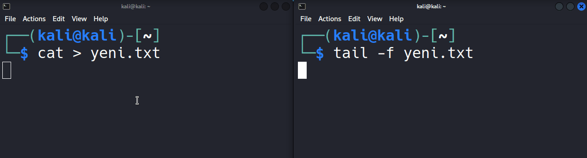
Normalde tablar genellikle boşluk bırakır ancak bazı metin editörleri bunu net göstermeyebilir. Bir metin dosyasındaki tablar istediğiniz aralığı sağlamayabilir. Sekmeleri boşluklara dönüştürmek için expand komutunu kullanabilirsiniz.
$ expand dosya.txt
Bu komut, her taksimi bir grup boşluğa dönüştürerek çıktıyı yazdıracaktır. Bu çıktıyı bir dosyaya kaydetmek için aşağıdaki gibi çıktı yönlendirmeyi kullanın.
$ expand dosya.txt > sonuc.txt
expand komutunun tersi olarak, boşluk gruplarını unexpand komutuyla tek bir tab'a dönüştürebilirsiniz:
$ unexpand -a sonuc.txt
Bu, özellikle metin dosyaları farklı programlar arasında paylaşılırken veya bir metin dosyasının biçimini korumak istediğinizde kullanışlıdır.
Bu komut, bir dosyadaki toplam kelime sayısını görüntüler.
┌──(ahmet㉿kali)-[~/Belgeler]
└─$ cat sayılar.txt
12 345
6789
┌──(ahmet㉿kali)-[~/Belgeler]
└─$ wc sayılar.txt
2 3 12 sayılar.txt
Buradaki ilk sayı dosya içeriğinin kaç satır olduğunu, ortadaki sayı toplam kaç kelime olduğunu ve son sayı ise toplam kaç karakter olduğunu bildiriyor.
-l (satır), -w (kelime) veya -c (karakter) seçeneklerini kullanabilirsiniz.$ wc -l /etc/passwd
96
nl (satır numaralandırma) komutunu da kullanabilirsiniz.$ cat dosya1.txt
ben
adana'yı
seviyorum
$ nl dosya1.txt
1. ben
2. istanbul'u
3. seviyorum
🔼 Başa Dön
Standart girdiden okuduğu verileri kendisinden sonraki komutun argümanı olarak iletebiliyor. Bu sayede standart girdiden veri kabul etmeyen araçları, tıpkı biz elle o araca argümanlar girmişiz gibi çalıştırabiliyoruz.
Örneğin içerisinde veri bulunan dosyamı oluşturmak üzere echo "dosya1 dosya2 dosya3" > veri şeklinde komutumu giriyorum.
┌──(ahmet㉿kali)-[~]
└─$ echo "dosya1 dosya2 dosya3" > veri
┌──(ahmet㉿kali)-[~]
└─$ cat veri
dosya1 dosya2 dosya3
Şimdi ben bu dosyada geçen ifadelerin kullanılarak yeni dosyalar oluşturulması için touch aracına bu dosyadan veri yönlendirmek istiyorum.
┌──(ahmet㉿kali)-[~]
└─$ cat veri | touch
touch: missing file operand
Try 'touch --help' for more information.
Gördüğünüz gibi touch komutu oluşturulacak dosya isimleri argüman olarak iletilmediği için hata verdi. Bu hatanın argüman eksikliğinden kaynaklandığını teyit etmek istersek tekrar yalnızca touch komutunu girdiğimizde aynı hata ile karşılaşırız.
touch aracı yalnızca kendisine argüman olarak iletilen verileri işleyip, standart girdiden veri okumadığı için pipe ile ilettiğimiz “veri” dosyasının içeriği touch aracı tarafından işlenmedi. Bu durumda bu çıktıları önce xargs aracına yönlendirip oradan da touch aracına argüman olarak iletilmelerini sağlayabiliriz.
┌──(ahmet㉿kali)-[~]
└─$ cat veri | xargs touch
┌──(ahmet㉿kali)-[~]
└─$ ls
dosya1 dosya2 dosya3 veri
Bakın tam olarak dosyada bulunan veriler ile aynı isimde yeni dosyalar oluşturulmuş. Yani xargs aracının standart girdiden okuduğu verileri hemen yanındaki komutun argümanı olarak çalıştırdığını bizzat teyit etmiş olduk.
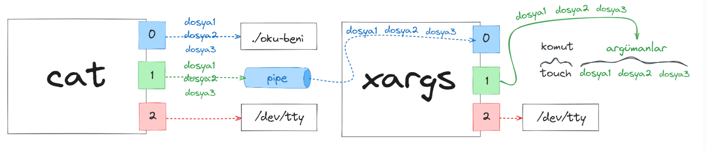
xargs aracı kendisine girdi olarak verilerin tüm verileri standart şekilde boşluklarından parçalara ayırıp bunların her birini hemen yanındaki komuta ayrı ayrı argüman olarak iletiyor.
Bu komut, ortak bir alanı temel alan birden fazla dosyayı birleştirebilir.
Örneğin, iki dosyayı birleştirmek istediğinizi varsayalım:
dosya1.txt
1 John
2 Jane
3 Mary
dosya2.txt
1 Doe
2 Doe
3 Sue
$ join dosya1.txt dosya2.txt
1 John Doe
2 Jane Doe
3 Mary Sue
Gördüğünüz gibi, dosyalar varsayılan olarak ilk alana göre birleştirilir ve alanların aynı olması gerekir. Aksi halde dosyaları sıralayabilirsiniz. Bu örnekte dosyalar 1, 2, 3 üzerinden birleştirildi.
Farklı alanları birleştirmek için hangi alanları kullanacağınızı belirtmeniz gerekir. Örneğin, dosya1.txt'de 2. alanı ve dosya2.txt'de 1. alanı birleştirmek istiyorsanız, komut şöyle görünür:
$ join -1 2 -2 1 dosya1.txt dosya2.txt
1 John Doe
2 Jane Doe
3 Mary Sue
-1 dosya1.txt'yi, -2 ise dosya2.txt'yi temsil eder.
$ split dosya
Bu komut, satır sayısı 1000'e ulaştığında dosyayı birden fazla dosyaya böler. Oluşan dosyalar varsayılan olarak x** şeklinde adlandırılır.
Bu komut, bir dosyadaki satırları alfabetik sıraya göre sıralar.
Örneğin, dosya1.txt adlı bir dosyanız olduğunu varsayalım:
dosya1.txt
köpek inek kedi fil kuş
$ sort dosya1.txt
fil
inek
kedi
köpek
kuş
Gördüğünüz gibi, sort komutu satırları alfabetik sıraya göre sıraladı.
Ters sıralama yapmak için -r seçeneğini kullanabilirsiniz:
$ sort -r dosya1.txt
kuş
köpek
kedi
inek
fil
Sayısal değer içeren metinleri sıralamak için -n seçeneğini kullanabilirsiniz:
$ sort -n dosya1.txt
fil
inek
kedi
köpek
kuş
Bu örnekte, sayılar metin içinde yer almasına rağmen, sort komutu -n seçeneği sayesinde sayısal olarak sıraladı.
Bu komut, bir metin içindeki karakterleri başka karakterlere dönüştürmek için kullanılır.
Örneğin, tüm küçük harfleri büyük harflere dönüştürmek için:
$ tr a-z A-Z
hello
HELLO
Komutta a-z küçük harflerin aralığını, A-Z ise büyük harflerin aralığını belirtir. Böylece, tr komutu yazdığınız tüm küçük harfleri büyük harfe dönüştürür.
uniq (unique) komutu, metin ayrıştırmak için kullanışlı bir başka araçtır.
Çok sayıda yinelenen öğe içeren bir dosyanız olduğunu varsayalım:
reading.txt
kitap
kitap
kağıt
kağıt
makale
makale
dergi
Yinelenen öğeleri kaldırmak istiyorsanız, uniq komutunu kullanabilirsiniz:
$ uniq reading.txt
kitap
kağıt
makale
dergi
Bir satırın kaç kez tekrar ettiğini görelim:
$ uniq -c reading.txt
2 kitap
2 kağıt
2 makale
1 dergi
Yalnızca tekil değerleri görelim:
$ uniq -u reading.txt
dergi
Yalnızca yinelenen değerleri görelim:
$ uniq -d reading.txt
kitap
kağıt
makale
Dikkat: uniq komutu, yan yana olmayan yinelenen satırları algılamaz. Örneğin, reading.txt dosyanız aşağıdaki gibi olsun:
reading.txt
kitap
kağıt
kitap
kağıt
makale
dergi
makale
Bu durumda uniq reading.txt komutu tüm satırları döndürür.
uniq komutunun bu sınırlamasını aşmak için sort komutuyla birlikte kullanabilirsiniz:
$ sort reading.txt | uniq
makale
kitap
dergi
kağıt
Bu şekilde, tüm yinelenen satırlar, konumlarından bağımsız olarak kaldırılır.
Belirli bir kalıpla eşleşen karakterleri dosyalarda aramanıza olanak tanır. grep aracı standart girdiden veya kendisine argüman olarak verilmiş olan dosyadan veri okuyup filtreleyebiliyor.
Bir dizinde belirli bir dosyanın olup olmadığını veya bir metnin bir dosyada bulunup bulunmadığını öğrenmek için grep aracı kullanılır!
Örneğin /etc/passwd dosyasında kaç kez “false” ifadesinin geçtiğini öğrenmek üzere grep komutundan sonra araştırmak istediğiniz kelimeyi ve daha sonra da hangi dosyada araştırılacağını giriyoruz.
┌──(ahmet㉿kali)-[~]
└─$ grep "false" /etc/passwd
dhcpcd:x:100:65534:DHCP Client Daemon:/usr/lib/dhcpcd:/bin/false
mysql:x:101:102:MariaDB Server:/nonexistent:/bin/false
tss:x:102:104:TPM software stack:/var/lib/tpm:/bin/false
Debian-snmp:x:112:115::/var/lib/snmp:/bin/false
speech-dispatcher:x:116:29:Speech Dispatcher:/run/speech-dispatcher:/bin/false
lightdm:x:124:127:Light Display Manager:/var/lib/lightdm:/bin/false
sddm:x:125:128:Simple Desktop Display Manager:/var/lib/sddm:/bin/false
Debian-gdm:x:980:980:Gnome Display Manager:/var/lib/gdm3:/bin/false
# yada
┌──(ahmet㉿kali)-[~]
└─$ cat /etc/passwd | grep false
dhcpcd:x:100:65534:DHCP Client Daemon:/usr/lib/dhcpcd:/bin/false
mysql:x:101:102:MariaDB Server:/nonexistent:/bin/false
tss:x:102:104:TPM software stack:/var/lib/tpm:/bin/false
Debian-snmp:x:112:115::/var/lib/snmp:/bin/false
speech-dispatcher:x:116:29:Speech Dispatcher:/run/speech-dispatcher:/bin/false
lightdm:x:124:127:Light Display Manager:/var/lib/lightdm:/bin/false
sddm:x:125:128:Simple Desktop Display Manager:/var/lib/sddm:/bin/false
Debian-gdm:x:980:980:Gnome Display Manager:/var/lib/gdm3:/bin/false
Birden fazla dosyanın tüm içeriğinde de filtreleme yapabiliriz. Örneğin /etc/passwd ve /etc/group dosya içeriklerinde “root” ifadesinin aranmasını için grep “root” /etc/passwd /etc/group şeklinde komut girebiliriz.
Not : Eğer tersi şekilde aradığımız ifadenin geçmediği bölümleri istersek bulun için grep aracının hariç tutma özelliği olan -v seçeneğini kullanabiliyoruz.
/etc/ dizini içinde, “bashrc” ifadesi geçen tüm dosyaları filtrelemeyi deneyebiliriz. Bunun için grep -r “bashrc” /etc/ 2> /dev/null şeklinde komutumu giriyorum. Buradaki -r seçeneği benim hedef gösterdiğim bu dizinden başlayıp tüm alt dizinler de dahil olmak üzere tüm dosyalarda “bashrc” ifadesinin geçtiği yerleri filtreleyip bana sunacak. Ayrıca yetki gibi nedenlerle oluşacak olan hatalı çıktıları yok etmek için 2> /dev/null komutunu da ekledim.┌──(ahmet@kali)-[~]
└─$ grep -r "bashrc" /etc/ 2> /dev/null
/etc/skel/.bashrc.original:# ~/.bashrc: executed by bash(1) for non-login shells.
/etc/skel/.bashrc.original:# this, if it's already enabled in /etc/bash.bashrc and /etc/profile
/etc/skel/.bashrc.original:# sources /etc/bash.bashrc).
/etc/skel/.profile: # include .bashrc if it exists
/etc/skel/.profile: if [ -f "$HOME/.bashrc" ]; then
/etc/skel/.profile: . "$HOME/.bashrc"
/etc/skel/.bashrc:# ~/.bashrc: executed by bash(1) for non-login shells.
/etc/skel/.bashrc:# this, if it's already enabled in /etc/bash.bashrc and /etc/profile
/etc/skel/.bashrc:# sources /etc/bash.bashrc).
/etc/apparmor.d/abstractions/bash: @{HOME}/.bashrc r,
/etc/apparmor.d/abstractions/bash: /etc/bashrc r,
/etc/apparmor.d/abstractions/bash: /etc/bash.bashrc r,
/etc/apparmor.d/abstractions/bash: /etc/bash.bashrc.local r,
/etc/apparmor.d/abstractions/bash: # run out of /etc/bash.bashrc
/etc/bash.bashrc:# System-wide .bashrc file for interactive bash(1) shells.
/etc/bash.bashrc.save.1:# System-wide .bashrc file for interactive bash(1) shells.
/etc/bash.bashrc.save:# System-wide .bashrc file for interactive bash(1) shells.
/etc/profile: # The file bash.bashrc already sets the default PS1.
/etc/profile: if [ -f /etc/bash.bashrc ]; then
/etc/profile: . /etc/bash.bashrc
-i seçeneği ile büyük/küçük harfe duyarlı olmayan aramalar yapabilirsiniz:
$ grep -i "false" /etc/group
grep komutunu, | sembolü ile diğer komutlarla birleştirebilirsiniz. Bu sayede daha esnek aramalar yapabilirsiniz:
$ env | grep -i User
Düzenli ifadeler, daha önce karşılaştığımız yıldız (*) gibi özel semboller kullanarak desenlere göre metin seçimi yapan güçlü bir araçtır. Bu ifadeler hemen hemen tüm programlama dillerinde kullanılabilir. grep aracı; “basit”, “genişletilmiş” ve “perl uyumlu” olmak üzere üç tür genişletme özelliğini destekliyor olmasına karşın varsayılan olarak “basit” genişletmeyi kullanıyor.
Regex’in temel karakterleri:
. - Herhangi bir tek karakteri temsil eder (satır sonu karakteri hariç).
* - Bir önceki karakterin sıfır veya daha fazla tekrarını temsil eder.
+ - Bir önceki karakterin bir veya daha fazla tekrarını temsil eder.
? - Bir önceki karakterin sıfır veya bir kez tekrarını temsil eder.
^ - Dizinin başlangıcını temsil eder.
$ - Dizinin sonunu temsil eder.
[] - Bir karakter kümesini belirtir. Bu kümedeki herhangi bir karakterle eşleşir.
[a-z] - Küçük harflerin olduğu bir karakter aralığını belirtir.
[A-Z] - Büyük harflerin olduğu bir karakter aralığını belirtir.
[0-9] - Rakamların olduğu bir karakter aralığını belirtir.
\ - Özel karakterlerin (örneğin . ) özel anlamlarını iptal eder.
| - Alternatifler arasında bir seçenek yani “ya da” koşulu belirtir.
Örnek metnimiz isimler.txt dosyası kullanılarak bazı filtreleme işlemleri yapalım:
^ ile Satırın Başı
Örneğin ben “ay” ifadesiyle başlayan satırları filtrelemek istersem grep “^ay” isimler.txt şeklinde komutumu yazabilirim.
└─$ grep "^ay" isimler.txt
aydin
ayşe fulya
ayşe gizem
aykut
aydin
ayşe
ayşegül
$ ile Satırın Sonu
└─$ grep "ay$" isimler.txt
Koray
Mehmet koray
Feray
Tümay
eray
Nuray
Ilkay
gökay
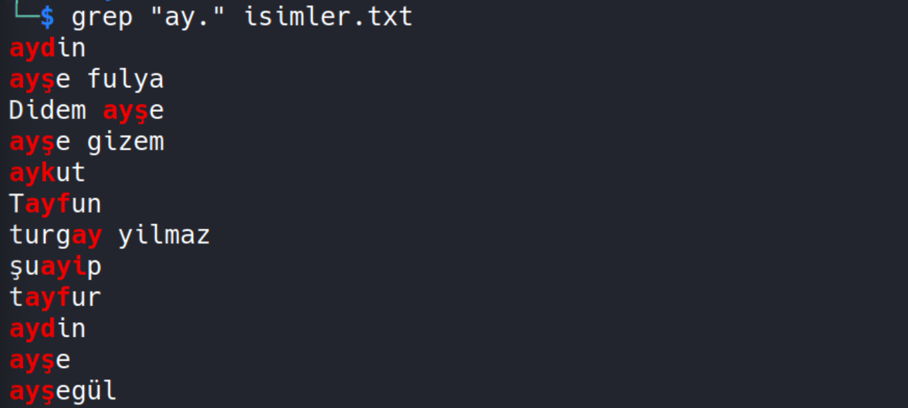
Örnek metnimiz olarak şunu ele alalım:
alican deniz kabukları satıyor
sahile göre
. ile Tek Karakter Eşleşmesi
s.
ifadesi "sahile" ile eşleşir.
[] ile Köşeli Ayraç Kullanımı
Köşeli ayraçlar, içinde belirtilen karakterlerden herhangi biriyle eşleşmeyi sağlar.
k[ıaö]z
Bu ifade "kız", "kaz" ve "köz" ile eşleşir.
Daha önce gördüğümüz `^`` sembolü, köşeli ayraç içinde kullanıldığında ayraç içindeki karakterler hariç herhangi bir karakteri temsil eder.
k[^ı]z
Bu ifade "kaz" ve "köz" ile eşleşir ancak "kız" ile eşleşmez.
Köşeli ayraçlar ayrıca aralıklarla birden fazla karakteri temsil edebilir.
k[a-c]z
Bu ifade "kaz", "kbz" ve "kcz" gibi desenlerle eşleşir.
Köşeli ayraçlar büyük/küçük harfe duyarlıdır:
k[A-C]z
Bu ifade "kAz", "kBz" ve "kCz" ile eşleşir, ancak "kaz", "kbz" ve "kcz" ile eşleşmez.
Emacs, son derece güçlü bir metin editörü arayan kullanıcılar içindir. Tüm kod düzenlemelerinizi, dosya işlemlerinizi vb. her şeyi emacs içinde yapabilirsiniz. Vim'e göre biraz daha yavaş açılır ve öğrenme eğrisi biraz daha diktir, ancak son derece genişletilebilir güçlü bir editör istiyorsanız, emacs tam size göre. Genişletilebilir derken, işlevselliğini genişleten emacs için script'ler yazabileceğinizi kastediyorum.
Emacs'ı başlatmak için:
emacs
komutunu kullanın. Varsayılan karşılama tamponuyla karşılanmalısınız.
Emacs'ta metinlerinizin bulunduğu yer tamponlardır. Yani bir dosya açarsanız, o dosyanın içeriğini depolamak için bir tampon kullanılır. Aynı anda birden fazla tampon açabilir ve tamponlar arasında kolayca geçiş yapabilirsiniz.
Emacs Dosyaları Manipüle Etme
Emacs dokümantasyonlarında C-[harf] sözdizimini göreceksiniz. Bu sadece Ctrl tuşuna basıp ardından belirtilen harfe basmak anlamına gelir, ancak kısaltma amacıyla Ctrl tuşuna C diyeceğiz. Eğer M-[harf] gibi bir sözdizimi görürseniz, bu genellikle Alt tuşu olan Meta tuşunu kullanmanız gerektiğini belirtir.
Dosya Kaydetme
C-x C-s - Bir dosyayı kaydeder.
C-x C-w - Dosyayı farklı kaydet (farklı isim vermek için).
C-x s - Tüm dosyaları kaydeder.
Dosya kaydetme seçenekleri her dosyayı kaydetmek isteyip istemediğinizi soracaktır.
Dosya Açma
C-x C-f
Bu sizi açmak için bir dosya adı yazmaya yönlendirecektir. Zaten var olan bir dosyanız yoksa, yeni bir dosya oluşturacaktır. Ayrıca bir dizini de yükleyebilirsiniz.
Emacs Buffer Navigasyonu
Tamponlar (veya ziyaret ettiğiniz dosyalar) arasında gezinmek için aşağıdaki komutlar kullanılır:
Buffer Değiştirme
C-x b - Tampon değiştirir.
C-x sağ ok - Tamponlar arasında sağa doğru dolaşır.
C-x sol ok - Tamponlar arasında sola doğru dolaşır.
Buffer Kapatma
C-x k
Geçerli Buffer Bölme
C-x 2
Bu, tek bir ekran üzerinde birden fazla tampon görmenizi sağlar. Bu tamponlar arasında gezinmek için: C-x o kullanılır.
Tek Bir Buffer Ekran Olarak Ayarlama
C-x 1
Eğer terminal multiplexer (ekran ve tmux gibi) kullandıysanız, tampon komutları size oldukça tanıdık gelecektir.
Metin Gezinme
C-yukarı ok : Bir paragraf yukarı git.
C-aşağı ok : Bir paragraf aşağı git.
C-sol ok : Bir kelime sola git.
C-sağ ok : Bir kelime sağa git.
M-> : Tamponun sonuna git.
Metin gezinmesinde, normal metin tuşlarınız olması gerektiği gibi çalışır; Home, End, Page Up, Page Down ve ok tuşları vb.
Kesme ve Yapıştırma
Emacs'ta metni kesmek (kill) veya yapıştırmak (yank) için öncelikle metni seçmeniz gerekir. Metni seçmek için, imlecinizi kesmek veya yapıştırmak istediğiniz yere getirin ve ardından C-space tuşuna basın. Ardından istediğiniz metni seçmek için gezinme tuşlarını kullanabilirsiniz. Şimdi kesme ve yapıştırmayı aşağıdaki gibi yapabilirsiniz:
C-w : Kes.
C-y : Yapıştır.
Emacs'ten Çıkış
C-x C-c
Emacs'ten çıkmadan önce herhangi bir açık tamponunuz varsa, kaydetmek isteyip istemediğinizi soracaktır.
C-h C-h : yardım menüsü
Geri Al
C-x u
Görebileceğiniz gibi Emacs'ın daha fazla hareketli parçacığı var, bu nedenle öğrenme eğrisi biraz daha zorlu. Ancak bunun karşılığında, çok güçlü bir metin editörü elde edersiniz.
🔼 Başa Dön
date KomutuTarih bilgisini komut satırından edinmek için date komutu kullanılır:
$ date
Sal 28 Tem 2026 12:58:37 +03
cal KomutuKomut satırı üzerinden takvim bilgisi sunan bir araçtır.
$ cal
June 2023
Su Mo Tu We Th Fr Sa
1 2 3
4 5 6 7 8 9 10
11 12 13 14 15 16 17
18 19 20 21 22 23 24
25 26 27 28 29 30
Eğer mevcut ayı değil de geçmiş ya da gelecek bir tarihten takvim bilgisine bakmak istersek cal ya da ncal komutunun ardından ay ve yılı belirterek tam istediğimiz tarihteki takvim bilgisine de ulaşabiliriz.
$ ncal 1 2000
January 2000
Su 2 9 16 23 30
Mo 3 10 17 24 31
Tu 4 11 18 25
We 5 12 19 26
Th 6 13 20 27
Fr 7 14 21 28
Sa 1 8 15 22 29
Benzer şekilde ileri tarih de belirtebiliriz ($ ncal 6 2033).
which Komutuwhich komutunu, çalıştırdığımız araçların dosya konumlarını öğrenmek için kullanılır. Konsola ls yazdığımızda kabuk öncelikle ls isminde bir yerleşik komutu var mı diye bakıyor, eğer yoksa PATH yolu üzerinde bu isimde bir dosya var mı diye araştırmaya giriyor ve eğer bulabilirse bu dosyayı çalıştırıyor. Yani aslında which komutu da PATH yoluna bakarak argüman olarak verdiğimiz aracı araştırıyor. Dolayısıyla PATH yolunda olmayan araçların dosya konumları which komutu tarafından bastırılamıyor.
$ which ls
/usr/bin/ls
İşte bu şekilde PATH yolu üzerindeki araçların tam dizin adreslerini öğrenebilirsiniz.
type Komutu | command & builtin KomutlarıKabuğa verdiğiniz komutların kabuk tarafından nasıl algılandığını görmenizi sağlıyor. Bu komut özellikle sistemde yüklü bulunan araçların isimleri ile aynı isimde takma isimler yani alias tanımlandığında, kabuğun bizim girdiğimiz komutu nasıl gördüğünü anlamak için kullanılır.
$ type ls
ls `ls --color=auto' için takma addır
Bakın kabuğa ls komutunu verdiğimde aslında kabuğun ls komutunu bir takma isim olarak kabul edip buradaki komutu çalıştırdığını öğrendik. Normalde standart ls aracı yani biz ls komutunu girdiğimizde çalıştırılan dosya /usr/bin/ls dosyası. Ama ls komutu ile aynı isimde yeni bir takma isim tanımlandığı için kabuk bizim girdiğimiz ls komutunu öncelikli olarak takma isim olarak dikkate alıyor ve buradaki takma isim tanımlamasından dolayı ls --color=auto komutunu çalıştırıyor.
$ type cd
cd bir kabuk yerleşiğidir
$ type nano
nano /usr/bin/nano'dir
⚠️ Uyarı: Takma isimler yerleşik ve harici komutlardan daha öncelikli değerlendirilir.
Kabuğun girdiğimiz komutun asıl işlevini yerine getirmesi için command veya builtin takma ismi görmezden gelip .
🔼 Başa Dön
Geleneksel tüm işletim sistemlerinde kullanıcılar ve gruplar bulunur. Bunlar yalnızca erişim ve izinleri yönetmek için vardır. Bir işlem çalıştırıldığında, ister Jane ister Bob olsun, bu işlemin sahibi olarak çalışır. Dosya erişimi ve sahipliği de izinlere bağlıdır. Jane'in Bob'un belgelerini görmesini istemezsiniz ve bunun tersi de geçerlidir.
Her kullanıcının kullanıcıya özgü dosyalarının saklandığı kendi ana dizini vardır. Bu genellikle /home/kullanıcı_adı konumunda bulunur, ancak farklı dağıtımlarda değişebilir.
Sistem, kullanıcıları yönetmek için kullanıcı kimlikleri (UID) kullanır. Kullanıcı adları, kullanıcıları tanımlama ile ilişkilendirmenin kolay yoludur, ancak sistem kullanıcıları UID'lerine göre tanımlar. Sistem ayrıca izinleri yönetmek için gruplar kullanır. Gruplar, izin seti o grup tarafından belirlenen kullanıcı kümeleridir ve sistem tarafından grup kimliği (GID) ile tanımlanır.
Linux'ta, sistemi kullanan normal insanlara ek olarak kullanıcılarınız da olacaktır. Bazen bu kullanıcılar, sistemi çalışır durumda tutmak için sürekli olarak işlemleri çalıştıran sistem hizmetleridir (daemon). En önemli kullanıcılardan biri root veya “süper” kullanıcıdır. root, sistemdeki en güçlü kullanıcıdır, root herhangi bir dosyaya erişebilir ve herhangi bir işlemi başlatabilir veya sonlandırabilir. Bu nedenle, her zaman root olarak çalışmak tehlikeli olabilir, potansiyel olarak sistem için kritik öneme sahip dosyaları silebilirsiniz. Neyse ki, root erişimine ihtiyaç duyulursa ve bir kullanıcının root erişimi varsa, sudo komutuyla bir komutu root olarak çalıştırabilir. sudo komutu (superuser do), bir komutu root erişimiyle çalıştırmak için kullanılır.
Linux’ta “süper(Super User)”, “sistem(System User)” ve “normal(Normal User)” olmak üzere üç tür kullanıcı bulunuyor.
Süper Kullanıcı: Aslında daha çok root yani “Kök Kullanıcı” olarak bilinen, sistem üzerindeki tüm haklara sahip olan en yetkili kullanıcı hesabına verilen bir isim. Yani biz root hesabını kullanıyorken, sistemdeki en yetkili olan “süper kullanıcı” hesabını yönetiyor olacağız.
Sistem Kullanıcısı: Yazılım veya uygulamalar tarafından oluşturulan ve yönetilen kullanıcılara da “sistem kullanıcısı” deniyor. Örneğin sistemimizde saatin senkronize edilmesini sağlayan ntp isimli bir araç yüklüyse bu aracın görevini yerine getirmek için kendisine ait bir sistem kullanıcı hesabı bulunuyordur. Bu sayede gerektiğinde bu kullanıcı hesabı üzerinden görevlerini yerine getirebilir. Tabii ki tüm araçların kendilerine ait kullanıcı hesapları olmasa da işte tıpkı ntp aracında olduğu gibi sistemdeki çeşitli yazılımların, işlerini görmek için kendi kullanıcı hesapları olması gerekebiliyor. Bu hesaplar insanların değil yazılımların, sistemdeki çeşitli görevleri yerine getirebilmek için kullandığı türden hesaplardır. Bu sebeple bu tür hesaplara “sistem kullanıcı” hesabı deniyor. Bu kullanıcıların yetkileri, yalnızca görevlerini yerine getirebilecekleri düzeyde olduğu için yetkileri olmayan işler yapamazlar.
Normal Kullanıcı: Normal olarak geçen kullanıcı hesapları, kök kullanıcısının oluşturduğu standart kullanıcı hesaplarıdır. Standart kullanıcıların temel görevleri yerine getirebilmeleri için oluşturulan hesaplardır. Bu tür hesapları standart insanlar kullanacağı için normal kullanıcılar kendi ev dizinlere sahiptir. Yani genellikle /home dizini altında kullanıcı isimleriyle oluşturulmuş olan bir klasörde, kişisel dosyalarını barındırmaları için bir ev dizinleri vardır. Ev dizini, insanların kişisel dosyalarını düzenli şekilde tutabilmeleri ve kendi kullanıcı hesaplarına yönelik kişiselleştirilmiş çalışma ortamına sahip olabilmeleri için önemli bir yaklaşım. Ev dizinleri dışında tabii ki normal kullanıcılar da sahip oldukları yetkiler dahilinde sistemdeki araçları kullanabilirler. Yetkilerinin düşük veya yüksek olmasına göre sistem üzerinde yetkileri dahilinde hareket edebilirler.
sudo komutuSistemi yönetirken, yetki gerektiren işlemler yapmamız gerebilir. Sistemde en yetkili kullanıcının root olduğunu öğrendik. Bu durumda ilgili görevleri yerine getirmek için root hesabına geçiş yapabiliriz. Ancak root hesabındayken, tüm yetkilere sahip olacağınız için, hatalı şekilde kritik dosyaları silmenizi önleyecek veya sistemin işleyişine zarar verecek bir eyleminizde sizi uyaracak bir mekanizma yoktur. Her şeyi root olarak çalıştırmak kritik bir hata yapmayı çok daha kolaylaştırır, sistem konfigürasyonlarını değiştirmek için kullandığınız komutların kayıtlarını tutmaz vb. Temel olarak, süper kullanıcı olarak komut çalıştırmanız gerekiyorsa, sadece sudo kullanın. Çünkü root hesabını yalnızca gerektiğinde kullandığınız ve ne yaptığınızı bildiğiniz varsayılır. Zaten root hesabını kullanmak tehlikeli olabileceği için çoğu sistemde root hesabı pasif şekilde gelir. Siz aktifleştirmediğiniz sürece root hesabı kullanılamaz.
Buna karşın root hesabı aktif olmasa bile yetki gerektiren işlerimiz için geçici olarak root yetkileri ile hareket edebilmemizi sağlayan sudo komutunu kullanabiliyoruz. sudo sayesinde root hesabı aktif değilken veya root aktifse bile root hesabının şifresini bilmeden yönetici ayrıcalıkları ile işlerimizi yürütmemiz mümkün oluyor.
Korunan bir dosyayı, örneğin /etc/shadow dosyasını görüntülemeye çalışın:
cat /etc/shadow
İzin reddedildi hatası alındı. İzinlere şu komutla bakılır:
ls -l /etc/shadow
çıktı:
-rw-r----- 1 root shadow 1134 Dec 1 11:45 /etc/shadow
Burada olan root dosyanın sahibi ve içeriği okumak için root erişimine sahip olmanız veya shadow grubunun bir parçası olmanız gerekiyor. Şimdi komutu sudo ile çalıştırın:
sudo cat /etc/shadow
Artık dosyanın içeriğini görebileceksiniz!
sudoers dosyasıSistem her sıradan kullanıcının süper kullanıcı olarak komut çalıştırmasına izin vermiyor, /etc/sudoers dosyası sudo çalıştırabilen kullanıcıları listeler. Bu dosyayı visudo komutuyla düzenleyebilirsiniz. Aslında normalde herhangi bir metin editörünü de kullanabiliriz fakat visudo aracı sayesinde dosyadaki yeni tanımların hata kontrolü yapıldığı için olası yanlış konfigürasyonların önüne geçmemiz de mümkün oluyor.
sudoers dosyası örnek:
root ALL=(ALL:ALL) ALL
ahmet ALL=(ALL:ALL) ALL
Anlamı:
kullanıcı host=(kullanıcı:grup) yetki
Kullanıcıya sudo yetkisi vermek
Örnek:
ahmet ALL=(ALL:ALL) ALL
veya grup ile:
%sudo ALL=(ALL:ALL) ALL
➜ Ubuntu / Kali / Debian sistemlerde sudo grubu kullanılır.
Kullanıcıyı gruba eklemek:
sudo usermod -aG sudo ahmet
Temel sudoers dosyasının yeri /etc/sudoers dosyasıdır. Ek dosyalar /etc/sudoers.d/ dizininede kural eklenebilir.
Kullanıcıya Özel Tanımlama
ali ALL=(ALL:ALL) /usr/bin/ls, /usr/bin/whoami
NOPASSWD ayarı (şifre sormasın)
Normal:
ahmet ALL=(ALL:ALL) ALL
Şifresiz sudo:
ahmet ALL=(ALL:ALL) NOPASSWD: ALL
Artık:
sudo ls
şifre istemez.
Sadece bazı komutlarda şifresiz
ahmet ALL=(ALL:ALL) NOPASSWD: /usr/bin/systemctl
Sadece belirli komuta izin verme
Örnek:
ahmet ALL=(ALL:ALL) /usr/bin/apt
Sadece apt çalıştırabilir:
sudo apt update
fakat
sudo nano
çalışmaz.
Birden fazla komut
ahmet ALL=(ALL:ALL) /usr/bin/apt, /usr/bin/systemctl
Komut yolu öğrenmek için:
$ which apt
/usr/bin/apt
Sadece belirli kullanıcıya sudo verme
Örnek:
ahmet ALL=(postgres) ALL
Bu durumda:
sudo -u postgres psql
çalışır
fakat
sudo nano
çalışmaz.
sudoers.d kullanımı
Ana dosyayı değiştirmek yerine:
/etc/sudoers.d/
dosya oluştur:
sudo nano /etc/sudoers.d/ahmet
yaz:
ahmet ALL=(ALL:ALL) ALL
bu yöntem daha güvenlidir.
En çok kullanılan sudoers ayarları
ahmet ALL=(ALL:ALL) ALLYeni bir kullanıcı hesabı oluşturmak istiyorsak, kullanıcı hesabı oluşturabilecek yetkimizin olması gerekiyor. Dolayısıyla bu işlem için en yetkili kullanıcı olan root kullanıcı hesabına ihtiyacımız var. Fakat bu durumun bir istisnası bulunuyor. Eğer normal bir kullanıcı root hesabının bulunduğu yetki grubuna dahil edildiyse bu kullanıcı, root gibi davranarak yetki gerektiren işlemleri yapabilir. Biz yetkili gruba dahil olduğumuzu kanıtlamak için sudo komutunu kullanıyoruz.
Yeni bir hesap oluşturmak için, “adduser” ya da “useradd” komutlarından herhangi birini kullanabiliyoruz.
$ sudo adduser nil
Yeni parola:
Yeni parolayı tekrar girin:
passwd: şifre başarıyla güncellendi
nil için kullanıcı bilgileri değiştiriliyor
Yeni değeri girin, veya varsayılan değer için ENTER'a basın
Tam İsim []:
Oda Numarası []:
İş Telefonu []:
Ev Telefonu []:
Diğer []:
Is the information correct? [Y/n] y
Arkaplanda gerçekleşen işlemler:
/home/nil dizininde oluşturuldu,/etc/skel dizinindeki dosyalar kopyalandı.useradd komutu ile kullanıcı oluşturma:
sudo useradd -m ali
Bu kullanıcı hesabına parola tanımlamak için de passwd komutunu kullanabiliriz.
$ sudo passwd ali
New password:
Retype new password:
passwd: password updated successfully
/etc/passwd dosyasıKullanıcı adları aslında kullanıcılar için gerçek tanımlayıcılar değildir. Sistem, bir kullanıcıyı tanımlamak için bir kullanıcı kimliği (UID) kullanır. Hangi kullanıcının hangi kimliğe eşleştiğini bulmak için /etc/passwd dosyasına bakın.
$ cat /etc/passwd
root:x:0:0:root:/root:/usr/bin/sh
daemon:x:1:1:daemon:/usr/sbin:/usr/sbin/nologin
bin:x:2:2:bin:/bin:/usr/sbin/nologin
sys:x:3:3:sys:/dev:/usr/sbin/nologin
.
.
.
king-phisher:x:133:141::/var/lib/king-phisher:/usr/sbin/nologin
taylan:x:1000:1000:,,,:/home/taylan:/usr/bin/bash
nil:x:1001:1002:,,,:/home/nil:/bin/bash
ali:x:1002:1004::/home/ali:/bin/sh
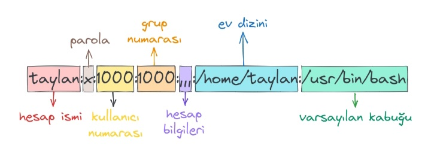
Bu dosya size bir kullanıcı listesi ve onlar hakkında detaylı bilgiler gösterir.
Her satır bir kullanıcı için kullanıcı bilgilerini görüntüler, genellikle ilk satırda root kullanıcısını görürsünüz. Size kullanıcı hakkında ek bilgiler veren noktalarla ayrılmış birçok alan vardır.
/etc/shadow dosyasında hash'li şekilde saklanır. Bu alanda birçok farklı sembol görebilirsiniz, eğer bir "x" görürseniz şifrenin /etc/shadow dosyasında saklandığı anlamına gelir, "*" sembolü kullanıcının oturum açma erişimine sahip olmadığı ve boş bir alan varsa kullanıcının şifresinin olmadığı anlamına gelir.bash'ı göreceksinizNormalde bir kullanıcının ayar sayfasında yalnızca normal kullanıcıları görmeyi beklersiniz. Ancak, /etc/passwd'ın diğer kullanıcıları da içerdiğini fark ede1ceksiniz. Unutmayın, kullanıcılar aslında sistemde yalnızca farklı izinlerle işlem çalıştırmak için vardır. Bazen önceden belirlenmiş izinlerle işlem çalıştırmak isteriz. Örneğin, daemon kullanıcısı daemon procesleri için kullanılır.
Ayrıca, kullanıcı eklemek ve bilgileri değiştirmek istiyorsanız /etc/passwd dosyasını manuel olarak vipw aracıyla düzenleyebilirsiniz. Ancak useradd , adduser ve userdel gibi araçları kullanmak en iyisidir.
Eğer bir kullanıcı hesabının bilgilerini silmeden o kullanıcı hesabını deaktif halde getirmek istersek; ilgili kullanıcının varsayılan kabuk programı yerine, kullanıcının oturum açmasını reddeden /usr/sbin/nologin dosyasını yazabiliriz.
Ben ali kullanıcısının oturum açmasını engellemek için buradaki kabuğu /usr/sbin/nologin şeklinde giriyorum.
ali:x:1002:1004::/home/ali:/usr/sbin/nologin
Mevcut konsolumuz üzerinden yeni bir kullanıcı hesabına geçiş yapmak için su komutunun ardından geçiş yapmak istediğimiz hesabın ismini girmemiz yeterli oluyor.
$ su ali
Parola:
This account is currently not available.
Bu şekilde komut girdiğimizde su aracı, ilgili kullanıcı hesabına geçiş yaparken mevcut kabuğun çalışma ortamındaki mevcut dizinini ve ortam değişkenleri gibi çeşitli özellikleri koruyarak geçiş yapılan kullanıcının kabuğunu alt kabukta başlatıyor. Yani aslında sıfırdan temiz bir kabuk ortamı başlatılmıyor.
Eğer biz mevcut kabuktan etkilenmeyecek temiz bir kabuk başlatılsın istersek komutumuz su - kullanıcı-adı şeklinde girebiliriz.
/etc/shadow dosyası/etc/shadow dosyası, kullanıcı kimlik doğrulaması hakkında bilgi depolamak için kullanılır. Bu dosyayı okumak için süper kullanıcı izinleri gerekir.
sudo cat /etc/shadow
İçeriği /etc/passwd dosyasına oldukça benziyor ancak şifre alanında şifreli bir şifre göreceksiniz. Alanlar şöyle noktalarla ayrılır:
Günümüzdeki çoğu dağıtımda, kullanıcı kimlik doğrulaması yalnızca /etc/shadow dosyasına güvenmez, kimlik doğrulamayı değiştiren PAM (Pluggable Authentication Modules) gibi başka mekanizmalar da vardır.
/etc/group dosyasıKullanıcı yönetiminde kullanılan bir diğer dosya ise /etc/group dosyasıdır. Bu dosya, farklı izinlere sahip farklı gruplar oluşturulmasını sağlar.
$ cat /etc/group
root:x:0:
daemon:x:1:
bin:x:2:
sys:x:3:
adm:x:4:root,taylan
.
.
.
vboxsf:x:142:
kaboxer:x:143:root,taylan
taylan:x:1000:
nil:x:1002:
ali:x:1004:
/etc/passwd dosyasına benzer şekilde, /etc/group dosyası alanları aşağıdaki gibidir:
Bir kullanıcının gruplarını öğrenmek için groups komutu kullanılır. (örn. groups ali)
Yeni bir grup oluşturmak için groupadd aracını kullanabiliriz. (örn. sudo groupadd yeni-grup)
Teyid etmek için:
$ tail -1 /etc/group
yeni-grup:x:1005:
Mevcut gruba kullanıcı eklemek için gpasswd aracını kullanabiliriz. (örn. sudo gpasswd -a ali yeni-grup)
Teyid etmek için:
$ tail -1 /etc/group
yeni-grup:x:1005:ali
$ groups ali
ali : ali yeni-grup
Gruptan kullanıcı silmek için gpasswd aracının -d seçeneği yani “delete” seçeneğiyle gruba ekli olan kullanıcıyı silebiliriz.yeni-grup grubuna eklediğimiz ali kullanıcısını silmek için:
$ sudo gpasswd -d ali yeni-grup
Removing user ali from group yeni-grup
Teyid etmek için:
$ groups ali
ali : ali
Grup silmek için groupdel aracı kullanılır.
sudo groupdel yeni-grup
Teyid etmek için:
grep "yeni-grup" /etc/group
Kullanıcı Silme
Bir kullanıcıyı kaldırmak için userdel komutunu kullanabilirsiniz.
sudo userdel ali
Fakat bu şekilde kullandığımızda kullanıcı hesabının ev dizini silinmediği için ek olarak -r seçeneğini de eklememiz gerekiyor.
Bu komut, temel olarak useradd tarafından yapılan dosya değişikliklerini geri almaya çalışır.
Silmek istediğiniz kullanıcının oturumu hala aktifse ve çalışmakta olan işlemler dolayısıyla silme işlemi başarısız olur. Bu durumda bu işlemleri sonlandırıp silme işlemini tekrar deneyebiliriz. Yada force yani zorlama seçeneğini kullanabiliriz. Bu seçenek sayesinde, silmek istediğimiz kullanıcıya ait aktif işlemler olsa bile silme işlemi gerçekleştiriliyor.
Şifre Değiştirme
Aşağıdaki komut size veya başka bir kullanıcıya (root yetkisine sahipseniz) şifreyi değiştirme izni verir.
sudo passwd ali
🔼 Başa Dön
Dosyaların ve dizinlerin farklı izinleri veya dosya modları vardır:
┌──(ahmet㉿kali)-[~]
└─$ ls -l
toplam 56
drwxr-xr-x 2 ahmet ahmet 4096 Oca 12 16:55 Belgeler
drwxrwxrwx 2 ahmet ahmet 4096 Ara 1 12:28 'BiglyBT Downloads'
drwxr-xrwx 2 ahmet ahmet 4096 Kas 25 13:35 Genel
drwxrwxr-x 4 ahmet ahmet 4096 Ara 1 13:08 GNUstep
drwxr-xrwx 3 ahmet ahmet 4096 Oca 15 17:26 İndirilenler
drwxr-xrwx 13 ahmet ahmet 4096 Oca 16 21:53 Masaüstü
-rw-rw-r-- 1 ahmet ahmet 24 Oca 16 22:28 metin.txt
drwxr-xrwx 2 ahmet ahmet 4096 Kas 25 13:35 Müzik
drwxr-xr-x 10 ahmet ahmet 4096 Oca 21 1970 pycharm-2025.3
drwxrwxr-x 4 ahmet ahmet 4096 Ara 16 12:38 PyCharmMiscProject
drwxrwxr-x 6 ahmet ahmet 4096 Oca 14 21:02 Python-3.14.2
drwxr-xrwx 3 ahmet ahmet 4096 Ara 3 16:11 Resimler
drwxr-xrwx 2 ahmet ahmet 4096 Kas 25 13:35 Şablonlar
drwxr-xrwx 3 ahmet ahmet 4096 Ara 5 22:23 Videolar
Bir dosyanın izinlerinin dört bölümü vardır. İlk bölüm, izinlerdeki ilk karakterle gösterilen dosya türüdür. Dizinler için d gösterir. Normal bir dosya için - görürsünüz.
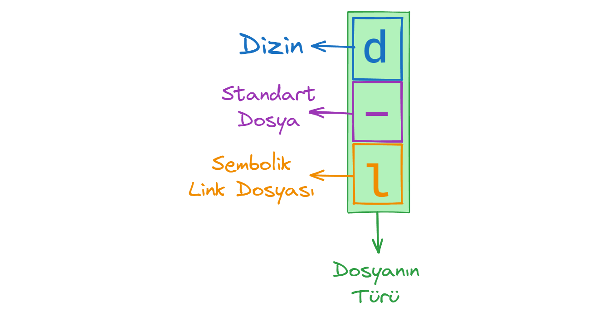
Dosya modunun sonraki üç bölüm izinlerdir. İzinler her biri 3 bitli gruplara ayrılır. İlk 3 bit kullanıcı izinleridir (sahibi), ardından grup izinleri (sahibi ile aynı gruptakiler) ve sonra diğer izinler (diğer kullanıcılar) gelir.
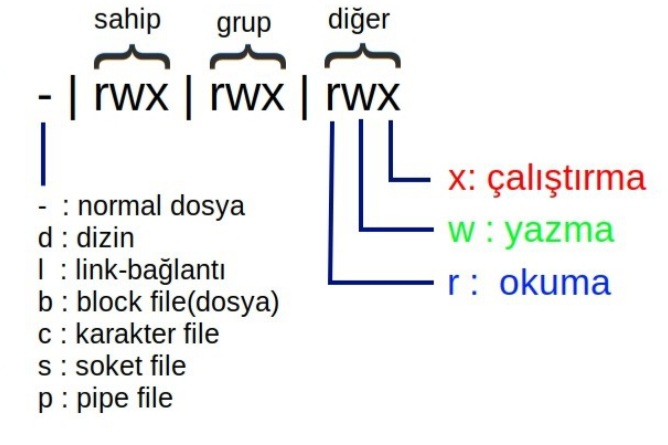
Her karakter farklı bir izni temsil eder:
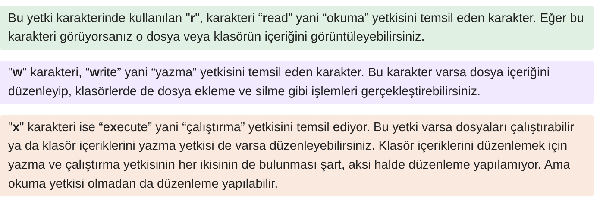
Dosya hakkında daha detaylı bilgi almak için stat komutu kullanılır.
$ stat <file_name>
tree : Bulunduğun dizini ağaç şeklinde göstermek için kullanılır. (gizli dosyalar için -a seçeneği dahil edilir)
İzinleri değiştirmek chmod komutu ile yapılabilir.
Öncelikle hangi izin setini değiştirmek istediğinizi seçin: kullanıcı-sahibi(u), grup(g) veya diğer(o). İzinleri + ile ekleyebilir, - ile kaldırabilirsiniz.
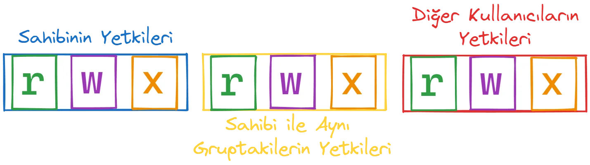
Dosyaya İzin Eklenme
chmod u+x metin.txt
Yukarıdaki komut metin.txt üzerindeki izinleri değiştirerek kullanıcı setine yürütülebilir izin biti ekler. Bu sayede artık kullanıcının bu dosya üzerinde yürütme izni var!
Dosyadan İzin Kaldırma
chmod u-x metin.txt
Dosyaya Birden Fazla İzin Eklenme
chmod ug+w metin.txt
İzinler sayısal biçimdede değiştirilir. Bu yöntem izinleri tek seferde değiştirmenize olanak tanır. İzinleri temsil etmek için r, w veya x kullanmak yerine, tek bir izin seti için sayısal bir gösterim kullanırsınız. Dolayısıyla g ile grubu veya u ile kullanıcıyı belirtmenize gerek yok.
chmod 755 metin.txt
Bu dosyaya, 755 artık tüm setler için izinleri kapsar. İlk sayı (7) kullanıcı izinlerini, ikinci sayı (5) grup izinlerini ve son 5 ise diğer izinleri temsil eder.
7 = 4 + 2 + 1 yani 7 kullanıcı(sahibi) izinleri okuma, yazma ve yürütme izinlerine sahip, 5 = 4 + 1 grubun okuma ve yürütme izinlerine sahip, 5 = 4 + 1 diğer tüm kullanıcıların okuma ve yürütme izni var.
➜ Dikkat edilmesi gereken bir nokta: izinleri gelişigüzel değiştirmek iyi bir fikir değildir, hassas bir dosyayı herkesin değiştirmesine izin verebilirsiniz, ancak izinleri gerçekten değiştirmek istediğiniz birçok durumda, chmod komutunu kullanırken önlem alın.
Dosya izinlerini değiştirmenin yanı sıra, dosyanın grup ve kullanıcı sahipliğini de değiştirebilirsiniz. Bunun için chown komutu kullanılır.
Kullanıcı sahipliğini değiştirme
sudo chown ahmet metin.txt
Bu komut, metin.txt dosyasının sahibini ahmet olarak ayarlayacaktır.
Grup sahipliğini değiştirme
sudo chgrp yeni-grup metin.txt
Bu komut, metin.txt dosyasının grubunu yeni-grup olarak ayarlayacaktır.
Kullanıcı ve grup sahipliğini aynı anda değiştirme
Kullanıcı adından sonra iki nokta üstüste (:) ve grup adı eklerseniz, kullanıcı ve grubu aynı anda ayarlayabilirsiniz.
sudo chown ahmet:yeni-grup metin.txt
Herhangi bir dosya oluşturulduğunda, varsayılan izinlerle birlikte gelir. Bu varsayılan izin setini değiştirmek isterseniz, umask komutunu kullanabilirsiniz. Bu komut, sayısal izinlerde gördüğümüz 3 bitlik izin setini alır.
Ancak umask bu izinleri eklemek yerine kaldırır.
umask 021
Yukarıdaki örnekte, yeni dosyaların varsayılan izinlerinin kullanıcılara her şeye erişim izni vermesini istediğimizi, ancak gruplar için yazma iznini ve diğerleri için yürütme iznini kaldırmak istediğimizi belirtiyoruz. Çoğu dağıtımda varsayılan umask 022'dir, yani tüm kullanıcı erişimi vardır, ancak grup ve diğer kullanıcılar için yazma erişimi yoktur.
umask komutunu çalıştırdığınızda, oluşturduğunuz herhangi bir yeni dosyada varsayılan izin setini verir. Ancak, bunun devam etmesini istiyorsanız, başlangıç dosyanızı (.profile) değiştirmeniz gerekir.
Normal kullanıcıların bazı durumlarda işleri tamamlamak için yetki yükseltmesine ihtiyaçları vardır. Sistem yöneticisi, her seferinde bir kullanıcı korunan bir dosyaya erişmek istediğinde kök parola girmek için her zaman orada olamaz, bu nedenle bu davranışa izin vermek için özel dosya izin bitimleri vardır.
Set Kullanıcı Kimliği (SUID), bir kullanıcının programı kendisinin yerine program dosyasının sahibi olarak çalıştırmasına izin verir.
Bir örneğe bakalım:
Diyelim ki şifremi değiştirmek istiyorum, sadece passwd komutunu kullanıyorum:
passwd
passwd komutu birkaç dosyayı değiştiriyor, ancak en önemlisi /etc/shadow dosyasını değiştiriyor. Bu dosyaya bakalım:
$ ls -l /etc/shadow
-rw-r----- 1 root shadow 1134 Dec 1 11:45 /etc/shadow
Bu dosya root'a ait? Root'a ait bir dosyayı nasıl değiştirebiliriz?
Bu sefer çalıştırdığımız komutun izin setine bakalım:
$ ls -l /usr/bin/passwd
-rwsr-xr-x 1 root root 47032 Dec 1 11:45 /usr/bin/passwd
Burada yeni bir izin biti s gördünüz mü? Bu izin biti SUID'dir. Bir dosyada bu izin seti olduğunda, programı başlatan kullanıcılara dosya sahibi izinlerinin yanı sıra yürütme izni de verir, bu durumda root. Yani aslında bir kullanıcı passwd komutunu çalıştırırken root olarak çalışır.
Bu nedenle, passwd komutunu çalıştırdığımızda /etc/shadow gibi korunan bir dosyaya erişebiliyoruz. Şimdi bu biti kaldırırsanız, /etc/shadow'u değiştiremeyeceğiniz ve dolayısıyla şifrenizi değiştiremeyeceğinizi göreceksiniz.
SUID'yi Değiştirme
Normal izinler gibi, SUID izinlerini değiştirmenin iki yolu vardır.
Sembolik yol:
sudo chmod u+s myfile
Sayısal yol:
sudo chmod 4755 myfile
Gördüğünüz gibi, SUID bir 4 ile gösterilir ve izin setine eklenir. SUID'yi büyük S olarak görebilirsiniz, bu aynı şeyi yaptığı anlamına gelir, ancak yürütme izinleri yoktur.
Set Grup Kimliği (SGID) izni
Kullanıcı kimliği (SUID) izin bitine benzer şekilde, bir set grup kimliği (SGID) izin biti de vardır. Bu bit, bir programın sanki o grubun bir üyesiymiş gibi çalışmasına izin verir.
$ ls -l /usr/bin/wall
-rwxr-sr-x 1 root tty 19024 Dec 14 11:45 /usr/bin/wall/ Some code
Artık izin bitinin grup izin seti içinde olduğunu görebiliyoruz.
SGID'yi Değiştirme
$ sudo chmod g+s myfile
$ sudo chmod 2555 myfile
SGID için sayısal gösterim 2'dir.
SUID izin biti etkinleştirilmiş passwd komutunu çalıştırdığınızda programı root olarak çalıştırırsınız. Bu doğru, ancak siz geçici olarak root olduğunuz için diğer kullanıcıların şifrelerini değiştirebileceğiniz anlamına mı geliyor? Neyse ki hayır!
Bu, Linux'un uyguladığı birçok UID nedeniyledir. Her işlemle ilişkili üç UID vardır:
Bir işlemi başlattığınızda, onu çalıştıran kullanıcı veya grubun izinleriyle aynı izinlerle çalışır, bu etkin kullanıcı kimliği (effective user ID) olarak bilinir. Bu UID, bir işleme erişim hakkı vermek için kullanılır. Bu nedenle, Bob touch komutunu çalıştırdıysa, işlem onun kimliğiyle çalışır ve oluşturduğu tüm dosyalar onun sahipliğinde olur.
Gerçek kullanıcı kimliği (real user ID) olarak adlandırılan başka bir UID vardır, bu, işlemi başlatan kullanıcının kimliğidir. Bunlar, işlemi başlatan kullanıcının kimliğini takip etmek için kullanılır.
Son bir UID ise kayıtlı kullanıcı kimliği (saved user ID)dir, bu bir işlemin etkin kullanıcı kimliği ile gerçek kullanıcı kimliği arasında geçiş yapmasına izin verir. Bu yararlıdır çünkü işlemimizin her zaman yüksek ayrıcalıklarla çalışmasını istemeyiz, yalnızca belirli zamanlarda özel ayrıcalıklar kullanmak iyi bir uygulamadır.
Şimdi bunların hepsini bir araya getirmek için passwd komutuna bir kez daha bakalım.
passwd komutunu çalıştırırken, etkin kullanıcı kimliğiniz sizin kullanıcı kimliğinizdir, şimdilik 500 olduğunu varsayalım. Ancak bir dakika bekleyin, passwd komutunun SUID izni etkinleştirilmişti, değil mi? Dolayısıyla siz çalıştırdığınızda, etkin kullanıcı kimliğiniz artık 0'dır (0, root'un UID'sidir). Artık bu program dosyalara root olarak erişebilir.
Diyelim ki biraz güç zevki aldınız ve Sally'nin şifresini değiştirmek istiyorsunuz, Sally'nin UID'si 600. Neyse ki şansınız yok, çünkü işlem aynı zamanda sizin gerçek kullanıcı kimliğinize de sahip, bu durumda 500. İşlem sizin UID'nizin 500 olduğunu biliyor ve bu nedenle 600 UID'li kullanıcının şifresini değiştiremezsiniz. (Tabii ki, bir bilgisayarda süper kullanıcıysanız ve her şeyi kontrol edip değiştirebiliyorsanız, bu her zaman atlanır).
passwd'ı çalıştırdığınızdan beri, işlemi gerçek kullanıcı kimliğinizi kullanarak başlatacak ve dosyanın sahibinin UID'sini (etkin kullanıcı kimliği) kaydedecektir, böylece ikisi arasında geçiş yapabilirsiniz. Gerekli değilse tüm dosyaları root erişimiyle değiştirmeye gerek yok.
Çoğu zaman gerçek kullanıcı kimliği ve etkin kullanıcı kimliği aynıdır, ancak passwd komutu gibi durumlarda değişirler.
Bahsetmek istediğim son bir özel izin biti ise sticky bit'tir. Bu izin biti, "dosyayı/dizinizi yapıştırır" anlamına gelir, bu da yalnızca sahip veya root kullanıcının dosyayı silebileceği veya değiştirebileceği anlamına gelir. Bu, ortak dizinler için çok faydalıdır. Aşağıdaki örneğe bir göz atın:
$ ls -ld /tmp
drwxrwxrwxt 6 root root 4096 Dec 15 11:45 /tmp
Burada sondaki t sembolünü göreceksiniz, bu herkesin /tmp dizinine dosya ekleyebileceği, yazabileceği, değiştirebileceği ancak yalnızca root kullanıcının /tmp dizinini silebileceği anlamına gelir.
Sticky Biti Değiştirme
$ sudo chmod +t mydir
$ sudo chmod 1755 mydir
Sticky bit için sayısal gösterim ise 1'dir.
🔼 Başa Dön
Linux’ta diskler ve bölümler /dev altında dosya gibi temsil edilir. İsimlendirme; disk türüne, bağlantı tipine ve bölüm numarasına göre değişir.
SATA / HDD / SSD Diskler
» IDE (P-ATA)
/dev/hda
/dev/hdb
hd → P-ATA disk sınıfıa, b → sırasıyla 1., 2. diskBölümler:
/dev/hda1
/dev/hda2
/dev/hda3
hda1 → ilk bölümhda2 → ikinci bölümhda3 → üçüncü bölüm» SCSI/SATA
/dev/sda
/dev/sdb
/dev/sdc
sd → SCSI/SATA disk sınıfıa, b, c → 1., 2., 3. diskÖrnek:
/dev/sda
→ Sistemdeki ilk SATA SSD/HDD.
Bölümler:
/dev/sda1
/dev/sda2
/dev/sda3
sda1 → ilk bölümsda2 → ikinci bölüm» NVMe SSD Diskler Yeni nesil M.2 NVMe SSD’ler:
/dev/nvme0n1
/dev/nvme1n1
nvme0 → ilk NVMe kontrolcüsün1 → namespace 1Bölümler:
/dev/nvme0n1p1
/dev/nvme0n1p2
p kullanılır çünkü isim zaten sayı içeriyor.Örnek:
/dev/nvme0n1p1
→ İlk NVMe SSD’nin ilk bölümü.
» USB Bellek / Harici Disk
Takıldığında genelde:
/dev/sdb
/dev/sdc
olarak görünür.
Çünkü Linux USB storage’ı çoğunlukla SCSI/SATA gibi yönetir.
Fiziksel diskimizi yazılımsal olarak bölümlere ayırıp farklı amaçlar için kullanabiliyoruz. Hangi disk bölümünün nerede başlayıp nerede bittiğinin bilgisi de “bölümlendirme tablosu” olarak isimlendirilen MBR ya da GPT tablolarında tutuluyor.
MBR, disk bölümleme tablosu maksimum 2 TB’a kadar olan disk boyutlarını destekliyor. Ve MBR disk bölümleme tablosu kullanılarak disk yalnızca 4 birincil (primary) bölüme ayrılabiliyor. Birincil bölümlerden birini mantıksal (logical) bölümlere ayrılan genişletilmiş (extended) bölüm olarak da kullanabiliyoruz. Yani MBR bölümleme tablosunda maksimum 3 birincil ve 1 genişletilmiş bölüm üzerinden 12 mantıksal olmak üzere toplam 15 tane bölüm oluşturabiliyoruz.
GPT, zaman içinde disk kapasitelerinin artması ve diskleri daha fazla alana bölümlenebilmesi ihtiyaçları doğrultusunda MBR‘ın yetersiz kaldığı noktada geliştirilmiş olan yeni nesil disk bölümleme tablosudur. GPT maksimum 8 ZiB‘a kadar olan disk boyutlarını destekliyor. Yani eski nesil bölümleme tablosu olan MBR’a oranla günümüz şartları için gereken büyüklükleri destekliyor. Ayrıca GPT sayesinde diski 128 bölüme ayırmamız da mümkündür.
Yani özetle MBR’a oranla GPT hem maksimum boyut hem de bölüm sayısı ile çok daha kullanışlı bir bölümleme tablosudur.
Bilgisayarın başlangıç aşamasından sorumlu olan yapılar:
Eğer sizin cihazınızda BIOS kullanılıyorsa, MBR disk bölümleme tablosunu kullanabiliyorsunuz. UEFI varsa, GPT bölümleme tablosunu kullanmanız mümkün oluyor.
Dosya Sistemi
cat /proc/filesystem komutunu girebiliriz.lsblkDiskler, Linux üzerinde blok aygıtları olarak anıldıkları için “list block devices” ifadesinin kısaltmasından gelen lsblk komutu ile disk aygıtlarının ve bölümlerinin sistem üzerindeki isimlerini öğrenebiliyoruz.
Not : Eğer aygıt dosyalarının sahip olduğu dosya sistemleri ve benzersiz kimlik numaraları olan UUID değeri hakkında bilgi almak istersek lsblk -f seçeneği kullanılır.
$ lsblk
NAME MAJ:MIN RM SIZE RO TYPE MOUNTPOINTS
nvme0n1 259:0 0 931,5G 0 disk
├─nvme0n1p1 259:1 0 488M 0 part /boot/efi
├─nvme0n1p2 259:2 0 18,6G 0 part [SWAP]
├─nvme0n1p3 259:3 0 372,5G 0 part /
├─nvme0n1p4 259:4 0 186,3G 0 part
└─nvme0n1p5 259:5 0 353,6G 0 part /run/media/ahmet/Yedek
↦ Disk bölümleme için fdisk aracı kullanılır.
↦ fdisk -l : Sistemde bulunan diskleri listeler.
Not : Yalnızca ilgili disk aygıtı hakkında bilgi almak istiyorsanız fdisk -l /dev/aygıt-adı şeklinde disk aygıtını argüman olarak da belirtebilirsiniz.
mountBir disk bölümünü “dosya sistemini” mevcut sistemimize bağlamak yani o disk bölümü içindeki verilere erişebilmek için “bağlama” anlamına gelen mount komutunun ardından, sisteme bağlamak istediğimiz disk bölümünün aygıt ismini ve bu bölümün dosya sistemi hiyerarşisinde hangi dizin altına bağlanacağı belirtilir.
mount /dev/sdb1 ~/Desktop/disk/
Artık ilgili disk bloğuna bu dizin altından erişebiliyor olacağım. Yani bu dizin içine bir dosya eklediğimde ya da buradaki bir dosyayı sildiğimde aslında o disk bölümündeki veriler üzerinde işlem yapmış olacağım. mount işleminin aslında disk bölümlerine bir nevi giriş kapısı görevi görür.
➜ Disk bölümünün sistemden ayırmak için umount ~/Desktop/disk/ komutu kullanılır.
Not : Eğer disk bölümü meşgul olduğu için bağını koparmamakta ısrar ediyorsa f yani force seçeneği ile çıkarmaya zorlayabilirsiniz. Yine de f seçeneği diskteki verilerin bozulmasına sebep olabileceği için zorunlu olmayan durumlar haricinde kullanılmamalıdır.
/etc/fstabLinux'ta bir disk, bölüm veya ağ paylaşımını her açılışta otomatik olarak bağlamak için /etc/fstab dosyası kullanılır.
lsblk -f
veya
sudo blkid
Örnek çıktı:
/dev/sda1 UUID="A1B2-C3D4" TYPE="vfat"
/dev/sda2 UUID="12345678-90ab-cdef-1234-567890abcdef" TYPE="ext4"
Örneğin bir veri diski için:
sudo mkdir /mnt/veri
sudo blkid
Örnek:
/dev/sdb1: UUID="12345678-90ab-cdef-1234-567890abcdef" TYPE="ext4"
/etc/fstab Dosyasını Düzenlemesudo nano /etc/fstab
Dosyanın sonuna aşağıdaki satırı ekleyin:
UUID=12345678-90ab-cdef-1234-567890abcdef /mnt/veri ext4 defaults 0 2
UUID=<uuid> <bağlama_noktası> <dosya_sistemi> <seçenekler> <dump> <fsck>
Örnek:
UUID=12345678-90ab-cdef-1234-567890abcdef /mnt/veri ext4 defaults 0 2
| Alan | Açıklama |
|---|---|
| UUID | Diskin benzersiz kimliği |
| Bağlama Noktası | Diskin bağlanacağı dizin |
| Dosya Sistemi | ext4, xfs, ntfs, vfat vb. |
| Seçenekler | defaults, rw, ro, noatime vb. |
| dump | Genellikle 0 |
| fsck | Kök dosya sistemi için 1, diğerleri için 2 |
↦ Seçenekler kısmından ilgili bölümün nasıl bağlanacağını belirtilir.
↦ dump seçeneği yedeklemeyle ilgili kısım.
↦ pass seçeneği, sistem başlangıcında ilgili disk üzerinde fsck aracının çalıştırılıp diskin kontrol edilip edilmeyeceğini belirtmemizi sağlıyor. Eğer ilgili disk bölümü kontrol edilsin istersek 1 veya 2 rakamlarından birini eklememiz gerekiyor. İlgili disk bölümün her sistem başlangıcında kontrol edilmesini istemiyorsanız 0 olarak belirlenir.
| Dosya Sistemi | Tür |
|---|---|
| ext4 | Linux |
| xfs | Linux |
| btrfs | Linux |
| vfat | FAT32 |
| exfat | exFAT |
| ntfs | Windows NTFS |
Örnek NTFS:
UUID=XXXX-XXXX /mnt/windows ntfs-3g defaults,uid=1000,gid=1000 0 0
Örnek exFAT:
UUID=XXXX-XXXX /mnt/exfat exfat defaults 0 0
Yeniden başlatmadan önce:
sudo mount -a
Hata yoksa yapılandırma doğrudur.
Bağlı diskleri kontrol etmek için:
df -h
veya
mount | grep /mnt
/dev/sda, /dev/sdb) değişebilir.UUID kullanılması önerilir.fstab girdisi sistemin açılışını engelleyebilir.sudo mount -a
komutu ile test yapılmalıdır.
# EFI Bölümü
UUID=A1B2-C3D4 /boot/efi vfat umask=0077 0 1
# Kök Dosya Sistemi
UUID=11111111-2222-3333-4444-555555555555 / ext4 defaults 0 1
# Veri Diski
UUID=66666666-7777-8888-9999-AAAAAAAAAAAA /mnt/veri ext4 defaults 0 2
# Windows Bölümü
UUID=BBBBBBBBBBBBBBBB /mnt/windows ntfs-3g defaults,uid=1000,gid=1000 0 0
🔼 Başa Dön
Diskimiz üzerinde mevcut bulunan ve sistemin çalıştırabileceği yapıda olan her türlü programın öncelikle RAM yani hafızaya yüklenmesi ve oradan da sırası geldiğinde CPU yani işlemci üzerinde işlenmesine bütüncül olarak “process” yani “işlem” diyoruz.
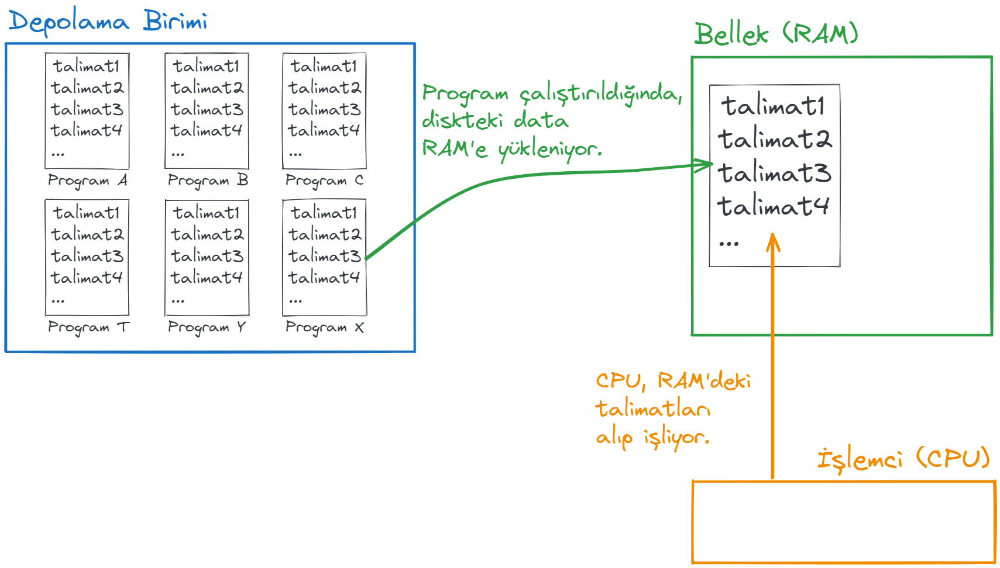
İşlem yönetimini, kabuğun başlattığı ve sistem genelinde kabuktan bağımsız başlatılmış olan işlemlerin yönetimi olarak ikiye ayırabiliriz.
Kabuk başlatabileceği iki tür işlem vardır.
Örneğin konsola firefox komutunu girecek olursak mevcut kabuk, firefox aracını bulup çalıştıracaktır.
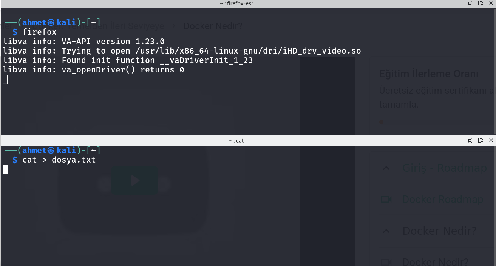
Fakat firefox aracı açık olduğu sürece “firefox” komutunu girmiş olduğumuz konsola yani bu kabuğa yeni herhangi bir komut giremeyiz. Aracı kapatmak için konsola Ctrl + C tuşlaması yapılmalı.
Üstelik ön plandaki işlemler grafiksel arayüze sahip olmak zorunda da değil. Örneğin cat > dosya.txt komutunu girdiğimizde mevcut konsol, cat aracının “dosya.txt” isimli dosyaya veri yazması için işlemi beklemeye başlıyor Ctrl + D tuşlaması ile veri girişini sonlandırana kadar cat işlemi ön planda bu konsol üzerinden bizden etkileşim bekliyor olacak.
Arka plan işlemleri sistem tarafından başlatılabileceği gibi kabuğumuz üzerinden başlatmamız da mümkündür. Örneğin firefox aracını arka planda başlatmak ve mevcut konsolu meşgul etmesini önlemek istersek bash kabuğuna firefox & komutu girilir.
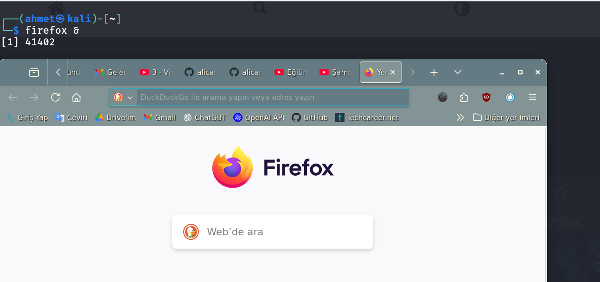
Firefox aracı arka planda açıldığı için bu aracı açan konsol bu işlem ile meşgul değil. Bu sebeple konsola yeni komutlar girmemiz mümkün.
Başlatılan işlemin durumunu kontrol etmek istersek jobs komutunu girip, mevcut kabuğun kontrolünde olan tüm işlemleri listeleyebiliriz.
┌──(ahmet㉿kali)-[~]
└─$ firefox &
[1] 52715
┌──(ahmet㉿kali)-[~]
└─$ jobs
[1]+ Çalışıyor firefox &
Arka plandaki işlemi ön plana almak için “foreground” ifadesinin kısaltmasından gelen fg aracınıı, fg iş-numarası şeklinde kullanabiliyoruz. Arka planda çalışmakta olan firefox işleminin iş numarası 1 olduğu için fg 1 şeklinde komut girilir.
Başlatılmış olan işlemleri arka plana almak için işlemi durdurduktan sonra “background” ifadesinin kısaltmasından gelen bg iş-numarası şeklinde komutumuzu girebiliriz.
Eğer işlemi sonlandırmak istersek “öldürmek” anlamındaki kill % iş-numarası komutunu kullanabiliyoruz.
Sistem üzerinde çalışmakta olan işlemleri anlık olarak takip etmek üzere top aracını kullanabiliyoruz.
top - 15:28:53 up 28 min, 1 user, load average: 0,35, 0,38, 0,39
Tasks: 358 total, 1 running, 357 sleeping, 0 stopped, 0 zombie
%Cpu(s): 3,6 us, 1,5 sy, 0,0 ni, 94,9 id, 0,0 wa, 0,0 hi, 0,0 si, 0,0 st
MiB Mem : 15731,7 total, 9408,3 free, 3721,1 used, 3824,5 buff/cache
MiB Swap: 17166,0 total, 17166,0 free, 0,0 used. 12010,7 avail Mem
PID USER PR NI VIRT RES SHR S %CPU %MEM TIME+ COMMAND
2814 ahmet 20 0 8735996 364576 154144 S 15,2 2,3 3:27.04 gnome-shell
9354 ahmet 20 0 1417,0g 367652 101840 S 12,3 2,3 2:49.64 chromium
2995 ahmet 20 0 1375672 152476 114412 S 7,6 0,9 0:05.54 konsole
2980 ahmet 20 0 920568 84452 67608 S 0,7 0,5 0:15.83 kdeconnectd
14328 root 0 -20 0 0 0 D 0,7 0,0 0:02.70 kworker/u49:1+i915_flip
15 root 20 0 0 0 0 I 0,3 0,0 0:03.35 rcu_preempt
20 root 20 0 0 0 0 S 0,0 0,0 0:00.00 cpu
21 root 20 0 0 0 0 S 0,0 0,0 0:00.00 cpuhp/2 .
.
.
Biz q tuşuna basıp aracı kapatana kadar anlık olarak tüm işlemler konsola bastırılıyor olacak.
Tablodaki temel sütunları açıklayacak olursak:
PID: Process id yani benzersiz işlem numarasıdır.
USER: İşlemin sahibi olan kullanıcıdır.
PR: Priority yani işlem önceliğini belirtir.
NI: İşlemin “nice” değeri. Diğer işlemlere ne kadar öncelik vereceğini belirtir.
S: Status yani “durum” bilgisidir. Çeşitli durumlar mevcuttur:
%CPU: İşlem tarafından kullanılan CPU yüzdesi
%MEM; İşlem tarafından kullanılan RAM yüzdesi.
TIME+: İşlem tarafından tüketilen CPU zamanı.
Command: İşlemi başlatan komut.
İşlemler, makinenizde çalışan programlardır. Çekirdek tarafından yönetilirler ve her işlemin, işlem kimliği (PID) adı verilen bir kimliği vardır. Bu PID, işlemlerin oluşturulma sırasına göre atanır.
Tek başına ps komutunu girdiğimizde, yalnızca o anda mevcut konsol üzerinde çalışmakta olan işleme dair bilgi sunar.:
┌──(ahmet㉿kali)-[~]
└─$ ps
PID TTY TIME CMD
4175 pts/0 00:00:00 bash
11137 pts/0 00:00:34 Typora
24241 pts/0 00:00:00 top
27888 pts/0 00:00:00 ps
Bu size mevcut işlemlerin hızlı bir görüntüsünü gösterir:
Geniş çaplı bilgi almak için genellikle ps aux komutu kullanılır.
a: tüm kullanıcılara ait olan işlemleri listeler.
u: işlemlerin sahibi olan kullanıcı bilgisini bastırır.
x: terminaller ile kontrol edilmeyen arka plan işlemlerini de bastırmayı sağlar.
$ ps aux
Bir işlemi durdurmak, duran işlemi devam ettirmek veya işlemi sonlandırmak istediğimizde ilgili işleme bu duruma uygun olan sinyali göndermemiz gerekiyor. Sinyal göndermek için de kill komutunu kullanabiliyoruz. kill komutu ile gönderebileceğimiz tüm sinyalleri görmek için kill -l komutunu kullanabiliriz.
┌──(ahmet㉿kali)-[~]
└─$ kill -l
1) SIGHUP 2) SIGINT 3) SIGQUIT 4) SIGILL 5) SIGTRAP
6) SIGABRT 7) SIGBUS 8) SIGFPE 9) SIGKILL 10) SIGUSR1
11) SIGSEGV 12) SIGUSR2 13) SIGPIPE 14) SIGALRM 15) SIGTERM
16) SIGSTKFLT 17) SIGCHLD 18) SIGCONT 19) SIGSTOP 20) SIGTSTP
21) SIGTTIN 22) SIGTTOU 23) SIGURG 24) SIGXCPU 25) SIGXFSZ
26) SIGVTALRM 27) SIGPROF 28) SIGWINCH 29) SIGIO 30) SIGPWR
31) SIGSYS 34) SIGRTMIN 35) SIGRTMIN+1 36) SIGRTMIN+2 37) SIGRTMIN+3
38) SIGRTMIN+4 39) SIGRTMIN+5 40) SIGRTMIN+6 41) SIGRTMIN+7 42) SIGRTMIN+8
43) SIGRTMIN+9 44) SIGRTMIN+10 45) SIGRTMIN+11 46) SIGRTMIN+12 47) SIGRTMIN+13
48) SIGRTMIN+14 49) SIGRTMIN+15 50) SIGRTMAX-14 51) SIGRTMAX-13 52) SIGRTMAX-12
53) SIGRTMAX-11 54) SIGRTMAX-10 55) SIGRTMAX-9 56) SIGRTMAX-8 57) SIGRTMAX-7
58) SIGRTMAX-6 59) SIGRTMAX-5 60) SIGRTMAX-4 61) SIGRTMAX-3 62) SIGRTMAX-2
63) SIGRTMAX-1 64) SIGRTMAX
Yaygın kullanıma sahip temel sinyaller:
SIGKILL (9): Öldürme sinyali. Hedef işlemin anında sonlandırılmasını sağlar. Genellikle bir işlemi zorla sonlandırmak için son çare olarak kullanılır.SIGSTOP (19): Durdurma sinyali. Hedef işlemin askıya alınarak durdurulmasını sağlar. Ctrl + Z kısayoluyla da bu sinyal üretilebiliyor.SIGCONT (18): Devam sinyali. Daha önce durdurulan bir işlemin çalışmaya devam etmesini sağlıyor.Çalışmakta olan bir işlemi durdurmak için sinyalın ismini ya da sayısal karşılığını kill SIGSTOP pid ya da kill -19 pid şeklinde girebiliyoruz. Durdurulmuş işlemi devam ettirmek için SIGCONT veya sinyalin sayısal karşılığı olan 18 sayısını kullanabiliyoruz. Eğer işlemi ani olarak kapatmak veya kapanmaya zorlamak istersek SIGKILL sinyalini yada 9 sayısını kullanırız.
killall komutu sayesinde argüman olarak verdiğimiz isimle eşleşen tüm işlemler sonlandırılıyor. Bu sayede tek tek hepsinin pid değerlerini bulmamız ve konsola girmemiz gerekmiyor. Kullanımı killall -9 firefox komutunu kullanacak olursak, firefox ile eşleşen tüm işlemler sonlandırılacak.
pgrep komutu “process” yani “işlemler” arasında bizim aradığımız işlemin, işlem numarasını filtreleyen bir araç. Bu sayede ilgili işlemin işlem numarasını manuel olarak bulmakla uğraşmamız gerekmiyor. İsmi üzerinden kolaylıkla öğrenebiliyoruz.
┌──(ahmet㉿kali)-[~]
└─$ pgrep firefox
64622
┌──(taylan㉿linuxdersleri)-[~]
└─$ ps x | tail
1220 pts/0 Ss 0:00 /usr/bin/bash
1258 ? Ss 0:00 /usr/libexec/bluetooth/obexd
61768 pts/1 Ss 0:00 /usr/bin/bash
62872 pts/0 S 0:00 sleep 700
64622 ? Sl 0:04 /usr/lib/firefox-esr/firefox-esr
64774 ? Sl 0:00 /usr/lib/firefox-esr/firefox-esr -contentproc -childID 2 -isForBrowser -prefsLen 4657 -prefMapSize 238089 -jsInit 285716 -parentBuildID 20220105212146 -appdir /usr/lib/firefox-esr/browser 64622 true tab
64810 ? Sl 0:00 /usr/lib/firefox-esr/firefox-esr -contentproc -childID 3 -isForBrowser -prefsLen 5317 -prefMapSize 238089 -jsInit 285716 -parentBuildID 20220105212146 -appdir /usr/lib/firefox-esr/browser 64622 true tab
64856 ? Sl 0:00 /usr/lib/firefox-esr/firefox-esr -contentproc -childID 5 -isForBrowser -prefsLen 5317 -prefMapSize 238089 -jsInit 285716 -parentBuildID 20220105212146 -appdir /usr/lib/firefox-esr/browser 64622 true tab
64948 pts/0 R+ 0:00 ps x
64949 pts/0 S+ 0:00 tail
┌──(ahmet㉿kali)-[~]
└─$ kill -9 $(pgrep firefox)
┌──(ahmet㉿kali)-[~]
└─$ ps x | tail
1182 ? Ssl 0:00 /usr/libexec/gvfs-afc-volume-monitor
1187 ? Ssl 0:00 /usr/libexec/gvfs-mtp-volume-monitor
1196 ? Sl 0:00 /usr/libexec/gvfsd-trash --spawner :1.15 /org/gtk/gvfs/exec_spaw/0
1209 ? Ssl 0:00 /usr/libexec/gvfsd-metadata
1220 pts/0 Ss 0:00 /usr/bin/bash
1258 ? Ss 0:00 /usr/libexec/bluetooth/obexd
61768 pts/1 Ss 0:00 /usr/bin/bash
62872 pts/0 S 0:00 sleep 700
65636 pts/0 R+ 0:00 ps x
65637 pts/0 S+ 0:00 tail
🔼 Başa Dön
Linux sistemlerinde çalışma seviyeleri (runlevels), sistemin hangi modda çalışacağını belirleyen işletim durumu seviyeleridir. Her çalışma seviyesi farklı servis ve kullanıcı ortamlarını ifade eder.
| Seviye | Açıklama |
|---|---|
| 0 | Sistemi kapatır (halt) |
| 1 | Tek kullanıcı modu (single-user / rescue mode) |
| 2 | Çok kullanıcılı mod (bazı dağıtımlarda ağsız) |
| 3 | Çok kullanıcılı metin tabanlı mod |
| 4 | Kullanıcıya özel / genellikle kullanılmaz |
| 5 | Grafik arayüzlü mod (GUI) |
| 6 | Sistemi yeniden başlatır (reboot) |
Çalışma seviyesine ait bütün betikler /etc/init.d altında yer alır. Her bir çalışma seviyesi için /etc/rcX.d şeklinde bir dizin olup o seviyede çalıştırılacak yada durdurulacak betiklere ait sembolinkler linkeri içerir. Yani /etc/init.d altındaki bütün betikler çalıştırılmaz, sadece ilgili çalışma seviyesinden linklenmiş betikler çalışır.
Çalışma seviyesi dizinleri şunlardır:
rc0.d rc1.d rc2.d rc3.d rc4.d rc5.d rc6.d
Mevcut çalışma seviyesini görmek için:
runlevel
veya:
who -r
Geçici olarak çalışma seviyesini değiştirmek için:
init 3
veya:
telinit 3
Bu örnekte sistem grafik arayüzden çıkıp metin tabanlı çok kullanıcılı moda geçer.
Sistemi kapatmak (halt) veya yeniden başlatmak (reboot) için telinit
kullanılabilir. Ancak daha güvenli yol olarak shutdown komutu
kullanılabilir. ‘halt’ ve ‘reboot’ komutları da aynı işlevi görürler. Bu iki komut da nihayetinde shutdown’u farklı parametrelerde çağıran kısaltmalardır. Aynı şekilde ‘poweroff’ komutu da yine shutdown’u
kullanan farklı bir kısaltmadır.
shutdown [-t sec] [-arkhncfFHP] süre [uyarı mesajı]
‘süre’ parametresi olarak ‘now’ denirse işlem hemen gerçekleştirilir. İstenirse ileri bir zaman verilebilir. Genel kullanıma açık sunucularda system kapamaları planlıdır ve önceden duyurulur.
Aşağıda farklı shutdown kullanımları görülmektedir.
shutdown -h nowshutdown -r nowshutdown -h 16:30shutdown -r +10Son kullanımdaki +10, şu andan itibaren 10 dakika sonra reboot et demektir.
Sistem açılırken GRUB ekranında çekirdek satırı düzenlenerek çalışma seviyesi geçici olarak değiştirilebilir.
e tuşuna basarak düzenleme ekranına girin.linux ile başlayan satırı bulun.Örneğin çalışma seviyesini 3 yapmak için:
linux /boot/vmlinuz ... 3
Ctrl + X veya F10 ile sistemi başlatın.Bu işlem yalnızca o açılış için geçerlidir ve kalıcı değildir.
GRUB ekranında → E tuşuna bas →
linux ile başlayan satırı bulun:
linux /boot/vmlinuz-... root=UUID=.... quiet splash
Satırın sonuna init=/bin/bash ifadesini ekleyip, linux satırında bulunan “ro” (read only yalnızca okuma yetkisi) ifadesini, “rw” ( read write yani hem okuma hem de yazma - değişiklik yapma) yetkisi olarak değiştirdikten sonra, satırın sonuna ”init=/bin/bash” ifadesini ekliyoruz. Bu değişiklik sayesinde disk üzerinde yazma yetkisi ve sistem başlangıcında bash kabuğuna erişim kazanmış olacağız.
❗ Öncelikle dosya sistemi yazılabilir olması için aşağıdaki komutla kök dizin bağlanır.
mount -o remount,rw /
� Not: Sisteme istediğiniz komutları vererek işleminizi gerçekleştirebilirsiniz.
✅ Sistemi yeniden başlatmak için:
exec /sbin/init
yada:
reboot -f
Fakat SELinux etkin sistemlerde (CentOS, RedHat vb..) son olarak touch /.autorelabel komutu ile kök dizinde “.autorelabel” dosyası oluşturulmalı. Çünkü güvenlik için kullanılan SELinux modülü her dosya ve işlem için, etiket (label) ile tanımlanır. Bu etiketler, dosyanın
veya işlemin üzerinde izin verilen işlemleri belirtir. Yani SELinux, bu etiketleri kullanarak dosya ve işlemlere olan erişimi kontrol eder.
Yapılan işlemlerde sistemde meydana gelecek olan etiket değişimi dolayısıyla SELinux aktif sistemde, yetki problemi oluşmaması için bu etiketlerin güncellenmesi gerekir.
İşte touch /.autorelabel komutu ile ana dizine “.autorelabel” dosyasını eklenir.
Günümüzde birçok Linux dağıtımı klasik runlevel sistemi yerine systemd kullanmaktadır. systemd içerisinde çalışma seviyeleri yerine “target” yapısı kullanılmaktadır.
| Runlevel | systemd Target |
|---|---|
| 3 | multi-user.target |
| 5 | graphical.target |
| 1 | rescue.target |
Örnek:
systemctl isolate multi-user.target
Bu komut sistemi çalışma seviyesi 3 benzeri moda geçirir.
🔼 Başa Dön
Servisler, sürekli olarak çalışan, çeşitli görevleri yerine getiren ve sisteme işlevsellik sağlayan arka plan işlemleridir. Genellikle sistem başlangıcında otomatik olarak başlatılır ve sistem çalıştığı süre boyunca aksini gerektiren bir durum olmadığı sürece çalışırlar.
Sistem üzerindeki servisleri yönetmek için en güncel ve yaygın kullanıma sahip olan “systemd” servis yöneticisini kullanacağız.
systemd aracı, kontrolü altındaki tüm yapıları “birim” yani “unit” olarak görüyor. Birimlerin tablosu aşağıdaki şekilde:
| Unit Type | File Extension |
|---|---|
| Service unit | .service |
| Target unit | .target |
| Automount unit | .automount |
| Device unit | .device |
| Mount unit | .mount |
| Path unit | .path |
| Scope unit | .scope |
| Slice unit | .slice |
| Snapshot unit | .snapshot |
| Socket unit | .socket |
| Swap unit | .swap |
| Timer unit | .timer |
Sistemimizde aktif olan yani halihazırda çalışmakta olan birimleri listelemek için systemctl list-units komutunu kullanılır. Eğer sistemdeki tüm birimleri listelemek istersek systemctl list-units —all komutunu kullanabiliriz. —state=inactive seçeneği ile inaktif olanları yani pasif olanlar listelenir.
Eğer spesifik olarak bir servisin durumunu sorgulamak istersek status seçeneği kullanılır.
┌──(ahmet㉿kali)-[~]
└─$ systemctl status apache2.service
○ apache2.service - The Apache HTTP Server
Loaded: loaded (/lib/systemd/system/apache2.service; disabled; vendor preset: disabled)
Active: inactive (dead)
Docs: https://httpd.apache.org/docs/2.4/
ℹ️ Not: apache2.service şeklinde birimin türünü (.service) açıkça belirttik fakat apache2 isminde başka bir birim türü yoksa apache2.service yerine doğrudan apache2 şeklinde de girilebilinir.
› Ayrıca servisin tam adından emin değilseniz systemctl list-unit-files | grep <filtre> komutu ile çıktı filtrelenebilinir.
İnaktif durumdaki bir birimi başlatmak için sudo systemctl start <birim-adı> komutu, çalışmakta olan birimi durdurmak için sudo systemctl stop <birim-adı> komutu kullanılır.
┌──(ahmet㉿kali)-[~]
└─$ systemctl start apache2.service
[sudo] password for ahmet:
┌──(ahmet㉿kali)-[~]
└─$ systemctl status apache2.service
● apache2.service - The Apache HTTP Server
Loaded: loaded (/lib/systemd/system/apache2.service; disabled; vendor preset: disabled)
Active: active (running) since Mon 2023-07-24 10:08:06 EDT; 6s ago
Docs: https://httpd.apache.org/docs/2.4/
Process: 15355 ExecStart=/usr/sbin/apachectl start (code=exited, status=0/SUCCESS)
Main PID: 15390 (apache2)
Tasks: 6 (limit: 12719)
Memory: 19.2M
CPU: 110ms
CGroup: /system.slice/apache2.service
├─15390 /usr/sbin/apache2 -k start
├─15391 /usr/sbin/apache2 -k start
├─15392 /usr/sbin/apache2 -k start
├─15393 /usr/sbin/apache2 -k start
├─15394 /usr/sbin/apache2 -k start
└─15395 /usr/sbin/apache2 -k start
Jul 24 10:08:01 linuxdersleri.net systemd[1]: Starting The Apache HTTP Server...
Jul 24 10:08:06 linuxdersleri.net systemd[1]: Started The Apache HTTP Server.
➜ Birimi yeniden başlatmak için restart seçeneği kullanılır. sudo systemctl restart <birim-adı>. Eğer servisi kesintiye uğratmadan yalnızca konfigürasyon değişikliklerinin geçerli olmasını isterseniz restart yerine reload seçeneğini kullanabilirsiniz.
Sistem başlangıcında otomatik olarak başlatılmasını istediğimiz birimleri systemd üzerinden “enabled” yani “aktif” şekilde tanımlamamız gerekir.
# Sistem bağlatıldığında apache2 servisini aktifleştirmek için.
$ sudo systemctl enable apache2
Synchronizing state of apache2.service with SysV service script with /lib/systemd/systemd-sysv-install.
Executing: /lib/systemd/systemd-sysv-install enable apache2
Created symlink /etc/systemd/system/multi-user.target.wants/apache2.service → /lib/systemd/system/apache2.service.
➜ Eğer sistem başlangıcında aktifleştirilmiş bir birimi pasif konuma getirmek istersek disable yani “devre dışı bırakma” seçeneği kullanılır. (sudo systemctl disable <birim-adı>)
Farklı durumlar için farklı birimlerin sistem açılışında otomatik olarak aktifleştirilmesini isteyebiliriz. systemd bu durumlar için “target” ismi verilen birimleri kullanıyor. target sayesinde sistem başlangıcında başlatılmasını istediğimiz tüm birimleri gruplayabiliyoruz. Temel target birimlerini listeleyecek olursak:
Kullanmakta olduğunuz sistemdeki varsayılan target bilgisini öğrenmek için systemctl get-default komutu kullanılır.
┌──(ahmet㉿linux)-[~]
└─$ systemctl get-default
graphical.target
Kullanmakta olduğumuz sistem graphical.target seviyesinde başlatıldığı için otomatik olarak ağ destekleri grafiksel çok kullanıcılı sistem için gerekli olan birimler de başlatılmış oluyor. Bu sayede grafiksel arayüze sahip olan, ağa bağlanabilen, çok kullanıcılı işletim sisteminde kullanmış oluyoruz.
Mevcut sistemimde tanımlı olan tüm targetleri öğrenmek üzere systemctl list-units —type target —all yada systemctl list-unit-files komutu kullanılır. Eğer varsayılan target birimini kalıcı olarak değiştirmek istersek set-default seçeneği kullanılır. Değişiklik sistem başlangıcında geçerli olur.
┌──(ahmet㉿kali)-[~]
└─$ systemctl get-default
graphical.target
┌──(ahmet㉿kali)-[~]
└─$ sudo systemctl set-default multi-user.target
Created symlink /etc/systemd/system/default.target → /lib/systemd/system/multi-user.target.
┌──(ahmet㉿kali)-[~]
└─$ systemctl get-default
multi-user.target
➜ Eğer değişikliğin anında mevcut oturum için yani geçici olarak geçerli olmasını istersek sudo systemctl isolate <isim.target> şeklinde komutumuzu girebiliriz.
systemctl isolate reboot.target komutunu girecek olursak, reboot.target birimi konfigürasyonları sebebiyle sistemin yeniden başlatılmasını sağlayacaktır.systemctl isolate multi-user.target : Sistemi grafik arayüzden çıkarıp çok kullanıcılı metin tabanlı moda geçirir. (Eski runlevel 3 karşılığı)systemctl isolate rescue.target : Sistemi kurtarma moduna geçirir. (Eski runlevel 1 / single-user mode karşılığı)Sistem açılışında çalışan servislerin unit dosyaları genellikle aşağıdaki dizinlerde bulunur:
/lib/systemd/system/
Paket yöneticisi tarafından kurulan servis dosyalarını içerir./etc/systemd/system/
Kullanıcı veya sistem yöneticisi tarafından oluşturulan/özelleştirilen servisleri içerir.Araçlarla birlikte gelen servis dosyaları /lib/systemd/system/ konumunda bulunuyor.
Sistem açılışında otomatik olarak çalışmasını istediğimiz servisler /etc/systemd/system/ konumunda bulunan kullanılan target birimi altına bu servis sembolik olarak bağlanmış olur. Eğer bu birimi devredışı bırakırsak da bu sembolik link silinecektir.
Hangilerinin açılışta aktif olduğunu görmek için:
$ systemctl list-unit-files --type=service
# yada
$ systemctl list-units --type=service
🔼 Başa Dön
Cron, Linux ve Unix tabanlı sistemlerde belirli görevleri otomatik olarak zamanlamak için kullanılan bir servisdir. Cron, Linux/Unix sistemlerinde belirli zamanlarda otomatik olarak görevleri çalıştıran bir sistem daemon'udur.
Bu otomatik görevlere Cron Job denir.
Cron arka planda çalışan bir daemon'dır:
crond
Bazı dağıtımlarda servis kontrolü:
systemctl status cron # Debian/Ubuntu
systemctl status crond # RHEL/CentOS/Kali
# Sistem genelinde cron görevleri
/etc/crontab
# Kullanıcı-özel cron görevleri
username # Linux
/var/spool/cron/tabs/username # macOS
Kullanıcıya ait zamanlanmış görevler crontab dosyasında tutulur.
Crontab düzenlemek için:
# Her kullanıcının kendi crontab'ı vardır.
# Kendi crontab'ını düzenlemek için varsayılan editör kullanılır.
crontab -e
# Belirli editörle açma
EDITOR=nano crontab -e
EDITOR=vim crontab -e
# Dosyadan crontab yükleme
crontab /path/to/file
Listelemek için:
# Mevcut kullanıcının crontab'ını görüntüleme
crontab -l
# Belirli kullanıcının crontab'ını görüntüleme (root olarak)
sudo crontab -u username -l
Silmek için:
# Crontab'ı silme (onay istenir)
crontab -r
# Zorla silme (onay istemez)
crontab -r -f
Cron 5 alanlı zaman yapısı kullanır:
* * * * * komut
│ │ │ │ │
│ │ │ │ └── Haftanın günü (0-7)
│ │ │ └──── Ay (1-12)
│ │ └────── Ayın günü (1-31)
│ └──────── Saat (0-23)
└────────── Dakika (0-59)
| Karakter | Anlamı | Örnek |
|---|---|---|
* | Her değer | Saat alanında * = her saat |
, | Liste değerleri | 1,3,5 = 1., 3. ve 5. değerler |
- | Aralık | 1-5 = 1'den 5'e kadar |
/ | Adım/Artış | */5 = her 5 birim, 0-23/2 = çift saatler |
? | Belirtilmemiş | Ay ve haftanın günü alanlarında kullanılır |
1. Dakika: 0-59
2. Saat: 0-23 (00:00 = gece yarısı, 12:00 = öğle)
3. Ayın günü: 1-31
4. Ay: 1-12 (1 = Ocak, 12 = Aralık)
5. Haftanın günü: 0-7 (0 ve 7 = Pazar, 1 = Pazartesi, 6 = Cumartesi)
6. Komut: Çalıştırılacak komut veya script
Her gün 02:00'de script çalıştır
0 2 * * * /home/user/backup.sh
Her 5 dakikada bir
*/5 * * * * /home/user/check.sh
Her pazartesi
0 9 * * 1 /home/user/report.sh
Her Gün 09:00'da Komut Çalıştır
0 9 * * * /path/to/script.sh
Her Pazartesi 15:30'da Komut Çalıştır
30 15 * * 1 /path/to/backup.sh
Her Saat Başında Çalıştır
0 * * * * /path/to/hourly_task.sh
Ayda Bir (Her Ayın 1. Günü) Saat 02:00'de
0 2 1 * * /path/to/monthly_task.sh
Hafta İçi (Pazartesi-Cuma) 09:00-17:00 Arası Her Saatte
0 9-17 * * 1-5 /path/to/work_hours.sh
Ayın Son Günü Gece Yarısında
0 0 31 1,3,5,7,8,10,12 * /path/to/month_end.sh
0 0 30 4,6,9,11 * /path/to/month_end.sh
0 0 28 2 * /path/to/month_end.sh
Saatte Üç Kez (00, 20, 40. dakikalarda)
0,20,40 * * * * /path/to/frequent.sh
İlk Pazartesi Her Ayda
0 9 1-7 * 1 /path/to/first_monday.sh
Her Gün 23:59'da Çalıştır (Gece Yarısından Bir Dakika Önce)
59 23 * * * /path/to/before_midnight.sh
Günlük Yedekleme
# Her gün 02:00'de yedekleme yap
0 2 * * * /usr/local/bin/backup.sh >> /var/log/backup.log 2>&1
Log Dosyalarını Temizleme
# Her pazar gece 03:00'te eski logları sil
0 3 * * 0 find /var/log -name "*.log" -mtime +30 -delete
Sistem Güncelleme Kontrolü
# Her Cuma 20:00'de güncellemeleri kontrol et
0 20 * * 5 sudo apt update && sudo apt upgrade -y
Veritabanı Temizliği
# Her gün 01:00'de geçici verileri sil
0 1 * * * mysql -u root -p'password' -e "DELETE FROM temp_table WHERE created_at < DATE_SUB(NOW(), INTERVAL 7 DAY);"
Sistem Bilgisi Raporlaması
# Pazartesi-Cuma 09:00'da sistem raporunu e-postayla gönder
0 9 * * 1-5 /usr/local/bin/system_report.sh | mail -s "Sistem Raporu" admin@example.com
# Standart çıktıyı dosyaya yaz
0 2 * * * /path/to/script.sh >> /var/log/my_backup.log 2>&1
# 2>&1 açıklaması:
# 1 = Standart çıktı (stdout)
# 2 = Standart hata (stderr)
# 2>&1 = Hataları da standart çıktıya yönlendir
# Çıktıyı tamamen iptal et (null cihazına gönder)
0 2 * * * /path/to/script.sh > /dev/null 2>&1
# Komut çıktısı e-posta ile gönder
0 2 * * * /path/to/script.sh | mail -s "Backup Sonucu" admin@example.com
# Hataları da dahil et
0 2 * * * (/path/to/script.sh) 2>&1 | mail -s "Backup Sonucu" admin@example.com
ps aux | grep cron
sudo systemctl status cron
# Sistem crontab'ını düzenleme (root olarak)
sudo crontab -e
# /etc/crontab dosyasını direkt düzenleme
sudo nano /etc/crontab
# 6. alan olarak kullanıcı adını belirtir
SHELL=/bin/bash
PATH=/usr/local/sbin:/usr/local/bin:/sbin:/bin:/usr/sbin:/usr/bin
# dakika saat gün ay haftaGünü kullanıcı komut
0 2 * * * root /path/to/backup.sh
30 * * * * nobody /path/to/check_mail.sh
/etc/cron.d/ # Ek sistem cron dosyaları
/etc/cron.daily/ # Günlük görevler
/etc/cron.hourly/ # Saatlik görevler
/etc/cron.monthly/ # Aylık görevler
/etc/cron.weekly/ # Haftalık görevler
Dosyaları doğrudan bu dizinlere koymak yeterlidir:
# Dosya oluştur ve çalıştırılabilir yap
sudo nano /etc/cron.daily/my_task
sudo chmod +x /etc/cron.daily/my_task
Modern Linux sistemlerde, klasik Cron yerine veya onun yanında systemd timer kullanılabilir.
Timer birimleri, belirli aralıklarla veya belirli zamanlarda servis (service unit) çalıştırmak için kullanılır.
Cron mantığına benzer ancak daha esnek ve güçlüdür.
Avantajları:
Bir timer genellikle iki dosyadan oluşur:
.service → Çalıştırılacak komut.timer → Ne zaman çalışacağını belirlerÖrnek:
backup.service
backup.timer
sudo nano /etc/systemd/system/backup.service
İçerik:
[Unit]
Description=Backup Script
[Service]
Type=oneshot
ExecStart=/home/user/backup.sh
sudo nano /etc/systemd/system/backup.timer
İçerik:
[Unit]
Description=Run backup daily
[Timer]
OnBootSec=1min
OnCalendar=daily
Persistent=true
Unit=backup.service
[Install]
WantedBy=timers.target
[Timer] başlığı altında hangi servisin hangi sıklıkla çalıştırılması gerektiğini tanımlayabiliyoruz.
OnBootSec seçeneği, 1min tanımlamasıyla systemd aracının bu zamanlanmış görevi sistem başlatıldıktan 1 dakika sonra tetiklemesi gerektiği belirtiyor. Eğer anında geçerli olması gerekiyorsa 0min şeklinde de tanımlanabilir.
Tanımlamak için YYYY-MM-DD HH:MM:SS modeli kullanıyor.
Yani: Yıl-Ay-Gün Saat:Dakika:Saniye şeklinde tanımlayabiliyoruz.
sudo systemctl daemon-reload
sudo systemctl enable --now backup.timer
› Çalıştırıldığında backup.timer, otomatik olarak backup.service birimini tetikler.
Aktif timerları listele:
systemctl list-timers
Durum kontrolü:
systemctl status backup.timer
Log görüntüleme:
journalctl -u backup.service
Her gün gece 02:00:
OnCalendar=*-*-* 02:00:00
Her pazartesi 09:00:
OnCalendar=Mon 09:00:00
Her saat başı:
OnCalendar=hourly
30 saniyede bir:
OnCalendar=*:*:0/30
2023 yılının 12. ayının 1. gününde 23.59 da çalışması için:
OnCalendar=2023-12-01 23:59:00
Her gün saat 9.30 da çalışması için:
OnCalendar=*-*-* 09:30:00
Her gün sabah 12 ve akşam 12 de çalışması için:
OnCalendar=*-*-* 12:00:00
OnCalendar=*-*-* 00:00:00
Her saat çalışması için:
OnCalendar=*-*-* *:00:00
İki saatte bir çalışması için
OnCalendar=*-*-* 00/2:00:00
💡 Buradaki taksim işaretinden sonraki sayı, tekrar edecek olan sayının katlarını belirtiyor. Bu sayede 00’dan başlayıp 2 şer artarak 2 saatte bir çalıştırılmış olacak.
Her dakika çalıştırmak için:
OnCalendar=*-*-* *:*:00
5 dakikadaki bir çalıştırmak için:
OnCalendar=*-*-* *:00/5:00
20 saniyede bir çalıştırmak için:
OnCalendar=*-*-* *:*:00/20
Pazartesiden cumaya her saat çalıştırmak için:
OnCalendar=Mon..Fri *-*-* *:00:00
Yalnızca hafta sonları 6 saatte bir çalıştırmak için:
OnCalendar=Sat,Sun *-*-* 00/6:00:00
Yalnızca pazartesi çarşamba ve cuma günleri her saat başında çalıştırmak için:
OnCalendar=Mon,Wed,Fri *-*-* *:00:00
Yılın ilk altı ayında 10 günde bir kez çalıştırmak için:
OnCalendar=Jan..Jun/10 00:00:00
Hazır ifadeler:
hourly
daily
weekly
monthly
yearly
Persistent=true
Sistem kapalıyken kaçan görev, sistem açılınca telafi edilir.
Cron'daki missed job sorununu azaltır.
Sistem açıldıktan 5 dakika sonra:
OnBootSec=5min
Her 30 dakikada tekrar:
OnUnitActiveSec=30min
| Özellik | Cron | systemd Timer |
|---|---|---|
| Basit görevler | ✔ | ✔ |
| Dependency yönetimi | ✘ | ✔ |
| Log takibi | Sınırlı | ✔ |
| Boot sonrası tetikleme | ✘ | ✔ |
| Missed job telafisi | ✘ | ✔ |
.service görev tanımlar..timer zamanlamayı yapar.systemctl list-timers ile kontrol edilir.